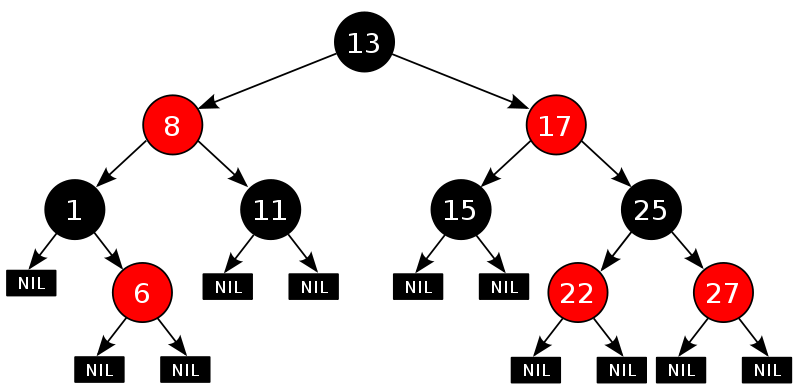

<!DOCTYPE html>
<html lang="zh">
<head><meta name="generator" content="Hexo 3.8.0">
    <meta charset="utf-8">
    
    <title>算法专题_二叉树 | FEI&#39;s Blog</title>
    
    
        <meta name="keywords" content="ACM">
    
    <meta name="viewport" content="width=device-width, initial-scale=1, maximum-scale=1">
    <meta name="description" content="树是没有环的图。树和链表、图都有关联。链表是树的一种特殊情况，而图都可以对应一棵生成树。学习完链表，学习树，然后学习图，是一个比较容易接受的过程。每个节点最多有两个子节点的树叫做二叉树。二叉树是递归定义的，这导致很多涉及二叉树的问题都可以用递归的方法求解。按照节点数目的不同，二叉树的类型有：完全二叉树，满二叉树和完美二叉树。">
<meta name="keywords" content="ACM">
<meta property="og:type" content="article">
<meta property="og:title" content="算法专题_二叉树">
<meta property="og:url" content="http://ff120.github.io/hexoblog/2017/04/09/技术/数据结构和算法/算法专题_二叉树/index.html">
<meta property="og:site_name" content="FEI&#39;s Blog">
<meta property="og:description" content="树是没有环的图。树和链表、图都有关联。链表是树的一种特殊情况，而图都可以对应一棵生成树。学习完链表，学习树，然后学习图，是一个比较容易接受的过程。每个节点最多有两个子节点的树叫做二叉树。二叉树是递归定义的，这导致很多涉及二叉树的问题都可以用递归的方法求解。按照节点数目的不同，二叉树的类型有：完全二叉树，满二叉树和完美二叉树。">
<meta property="og:locale" content="zh-Hans">
<meta property="og:image" content="http://ff120.github.io/hexoblog/2017/04/09/技术/数据结构和算法/算法专题_二叉树/construct_tree.svg">
<meta property="og:image" content="http://ff120.github.io/hexoblog/2017/04/09/技术/数据结构和算法/算法专题_二叉树/2017-04-11_094148.png">
<meta property="og:updated_time" content="2019-03-28T00:54:56.337Z">
<meta name="twitter:card" content="summary">
<meta name="twitter:title" content="算法专题_二叉树">
<meta name="twitter:description" content="树是没有环的图。树和链表、图都有关联。链表是树的一种特殊情况，而图都可以对应一棵生成树。学习完链表，学习树，然后学习图，是一个比较容易接受的过程。每个节点最多有两个子节点的树叫做二叉树。二叉树是递归定义的，这导致很多涉及二叉树的问题都可以用递归的方法求解。按照节点数目的不同，二叉树的类型有：完全二叉树，满二叉树和完美二叉树。">
<meta name="twitter:image" content="http://ff120.github.io/hexoblog/2017/04/09/技术/数据结构和算法/算法专题_二叉树/construct_tree.svg">
    

    
        <link rel="alternate" href="/atom.xml" title="FEI&#39;s Blog" type="application/atom+xml">
    

    
        <link rel="icon" href="/hexoblog/favicon.ico">
    

    <link rel="stylesheet" href="/hexoblog/libs/font-awesome/css/font-awesome.min.css">
    <link rel="stylesheet" href="/hexoblog/libs/open-sans/styles.css">
    <link rel="stylesheet" href="/hexoblog/libs/source-code-pro/styles.css">

    <link rel="stylesheet" href="/hexoblog/css/style.css">
    <script src="/hexoblog/libs/jquery/2.1.3/jquery.min.js"></script>
    <script src="/hexoblog/libs/jquery/plugins/cookie/1.4.1/jquery.cookie.js"></script>
    
    
        <link rel="stylesheet" href="/hexoblog/libs/lightgallery/css/lightgallery.min.css">
    
    
        <link rel="stylesheet" href="/hexoblog/libs/justified-gallery/justifiedGallery.min.css">
    
    
    
    


    
        <script async src="//busuanzi.ibruce.info/busuanzi/2.3/busuanzi.pure.mini.js"></script>
    
</head>
</html>
<body>
    <div id="container">
        <header id="header">
    <div id="header-main" class="header-inner">
        <div class="outer">
            <a href="/hexoblog/" id="logo">
                <i class="logo"></i>
                <span class="site-title">FEI&#39;s Blog</span>
            </a>
            <nav id="main-nav">
                
                    <a class="main-nav-link" href="/hexoblog/">首页</a>
                
                    <a class="main-nav-link" href="/hexoblog/archives">归档</a>
                
                    <a class="main-nav-link" href="/hexoblog/categories">分类</a>
                
                    <a class="main-nav-link" href="/hexoblog/tags">标签</a>
                
                    <a class="main-nav-link" href="/hexoblog/about">关于</a>
                
            </nav>
            
            <div id="search-form-wrap">

    <form class="search-form">
        <input type="text" class="ins-search-input search-form-input" placeholder="Rechercher">
        <button type="submit" class="search-form-submit"></button>
    </form>
    <div class="ins-search">
    <div class="ins-search-mask"></div>
    <div class="ins-search-container">
        <div class="ins-input-wrapper">
            <input type="text" class="ins-search-input" placeholder="Type something...">
            <span class="ins-close ins-selectable"><i class="fa fa-times-circle"></i></span>
        </div>
        <div class="ins-section-wrapper">
            <div class="ins-section-container"></div>
        </div>
    </div>
</div>
<script>
(function (window) {
    var INSIGHT_CONFIG = {
        TRANSLATION: {
            POSTS: 'Articles',
            PAGES: 'Pages',
            CATEGORIES: 'Catégories',
            TAGS: 'Tags',
            UNTITLED: '(Untitled)',
        },
        ROOT_URL: '/hexoblog/',
        CONTENT_URL: '/hexoblog/content.json',
    };
    window.INSIGHT_CONFIG = INSIGHT_CONFIG;
})(window);
</script>
<script src="/hexoblog/js/insight.js"></script>

</div>
        </div>
    </div>
    <div id="main-nav-mobile" class="header-sub header-inner">
        <table class="menu outer">
            <tr>
                
                    <td><a class="main-nav-link" href="/hexoblog/">首页</a></td>
                
                    <td><a class="main-nav-link" href="/hexoblog/archives">归档</a></td>
                
                    <td><a class="main-nav-link" href="/hexoblog/categories">分类</a></td>
                
                    <td><a class="main-nav-link" href="/hexoblog/tags">标签</a></td>
                
                    <td><a class="main-nav-link" href="/hexoblog/about">关于</a></td>
                
                <td>
                    
    <div class="search-form">
        <input type="text" class="ins-search-input search-form-input" placeholder="Rechercher">
    </div>

                </td>
            </tr>
        </table>
    </div>
</header>

        <div class="outer">
            
            
                <aside id="sidebar">
   
        
    <div class="widget-wrap" id="categories">
        <h3 class="widget-title">
            <span>Catégories</span>
            &nbsp;
            <a id="allExpand" href="#">
                <i class="fa fa-angle-double-down fa-2x"></i>
            </a>
        </h3>
        
        
        
         <ul class="unstyled" id="tree"> 
                    <li class="directory">
                        <a href="#" data-role="directory">
                            <i class="fa fa-folder"></i>
                            &nbsp;
                            心理学
                        </a>
                         <ul class="unstyled" id="tree"> 
                    <li class="directory">
                        <a href="#" data-role="directory">
                            <i class="fa fa-folder"></i>
                            &nbsp;
                            记忆魔法
                        </a>
                         <ul class="unstyled" id="tree">  <li class="file"><a href="/hexoblog/2019/04/03/心理学/记忆魔法/代码记忆法/">代码记忆法</a></li>  </ul> 
                    </li> 
                     </ul> 
                    </li> 
                    
                    <li class="directory open">
                        <a href="#" data-role="directory">
                            <i class="fa fa-folder-open"></i>
                            &nbsp;
                            技术
                        </a>
                         <ul class="unstyled" id="tree"> 
                    <li class="directory">
                        <a href="#" data-role="directory">
                            <i class="fa fa-folder"></i>
                            &nbsp;
                            Web开发
                        </a>
                         <ul class="unstyled" id="tree">  <li class="file"><a href="/hexoblog/2016/06/11/技术/Web开发/后台开发_How-to-install-Laravel-framework/">How to install Laravel framework</a></li>  <li class="file"><a href="/hexoblog/2016/06/11/技术/Web开发/后台开发_laravel-4-note-01/">laravel 4 note 01</a></li>  <li class="file"><a href="/hexoblog/2016/06/11/技术/Web开发/后台开发_Make-phpStorm-friendly-to-laravel/">Make phpStorm friendly to laravel</a></li>  <li class="file"><a href="/hexoblog/2016/06/11/技术/Web开发/后台开发_sublime-Text-tricks/">sublime Text tricks</a></li>  <li class="file"><a href="/hexoblog/2016/06/11/技术/Web开发/后台开发_think-php-note-01/">think php note 01</a></li>  <li class="file"><a href="/hexoblog/2016/06/11/技术/Web开发/后台开发_think-php-note-02/">think php note 02</a></li>  <li class="file"><a href="/hexoblog/2016/06/11/技术/Web开发/后台开发_think-php-note-03/">think php note 03</a></li>  <li class="file"><a href="/hexoblog/2016/06/11/技术/Web开发/后台开发_PHP编译less文件-lessphp的使用/">PHP编译less文件-lessphp的使用</a></li>  <li class="file"><a href="/hexoblog/2016/06/11/技术/Web开发/后台开发_Lavarel-后台组件frozenode的使用/">Lavarel 后台组件frozenode的使用</a></li>  <li class="file"><a href="/hexoblog/2016/06/11/技术/Web开发/后台开发_Linux常用命令/">Linux常用命令</a></li>  <li class="file"><a href="/hexoblog/2016/06/11/技术/Web开发/后台开发_Linux主机之间同步文件/">Linux主机之间同步文件</a></li>  <li class="file"><a href="/hexoblog/2016/06/11/技术/Web开发/后台开发_PHP基本操作/">PHP基本操作</a></li>  <li class="file"><a href="/hexoblog/2016/06/11/技术/Web开发/后台开发_短信验证码的实现/">短信验证码的实现</a></li>  <li class="file"><a href="/hexoblog/2016/06/11/技术/Web开发/后台开发_配置Apache支持使用HTTPS/">配置Apache支持使用HTTPS</a></li>  <li class="file"><a href="/hexoblog/2016/06/11/技术/Web开发/测试_使用Selenium测试UI/">测试_使用Selenium测试UI</a></li>  <li class="file"><a href="/hexoblog/2016/06/11/技术/Web开发/后台开发_PhpStorm常用快捷键/">PhpStorm常用快捷键</a></li>  <li class="file"><a href="/hexoblog/2016/06/11/技术/Web开发/微信开发_微信发送消息PHP-SDK/">微信发送消息PHP SDK</a></li>  <li class="file"><a href="/hexoblog/2016/06/11/技术/Web开发/微信开发_获取地理位置/">微信获取地理位置 </a></li>  <li class="file"><a href="/hexoblog/2016/06/11/技术/Web开发/微信开发_发送模板消息的代码/">微信发送模板消息的代码</a></li>  <li class="file"><a href="/hexoblog/2016/06/11/技术/Web开发/测试_Selenium-定位元素的几种方式/">测试_Selenium定位元素的几种方式</a></li>  <li class="file"><a href="/hexoblog/2016/06/11/技术/Web开发/测试_Selenium-Action/">测试_Selenium Action</a></li>  <li class="file"><a href="/hexoblog/2016/06/11/技术/Web开发/测试_Apache-JMeter的使用/">测试_Apache JMeter的使用</a></li>  <li class="file"><a href="/hexoblog/2016/06/12/技术/Web开发/后台开发_Apache-配置虚拟主机/">Apache 配置虚拟主机</a></li>  <li class="file"><a href="/hexoblog/2016/06/23/技术/Web开发/后台开发_改进PHP的var-dump-方法使之适应显示从数据库中查出来的数据/">改进PHP的var_dump()方法使之适应显示从数据库中查出来的数据</a></li>  <li class="file"><a href="/hexoblog/2016/06/23/技术/Web开发/后台开发_PHP读写XLS/">PHP读写XLS</a></li>  <li class="file"><a href="/hexoblog/2016/06/30/技术/Web开发/前端_jQuery-EasyUI-学习笔记/">JQuery EasyUI 学习笔记</a></li>  <li class="file"><a href="/hexoblog/2016/06/30/技术/Web开发/前端_bootsharp学习笔记/">Bootsharp学习笔记</a></li>  </ul> 
                    </li> 
                    
                    <li class="directory">
                        <a href="#" data-role="directory">
                            <i class="fa fa-folder"></i>
                            &nbsp;
                            专业术语
                        </a>
                         <ul class="unstyled" id="tree">  <li class="file"><a href="/hexoblog/2017/07/24/技术/专业术语/术语/">英语</a></li>  </ul> 
                    </li> 
                    
                    <li class="directory">
                        <a href="#" data-role="directory">
                            <i class="fa fa-folder"></i>
                            &nbsp;
                            大数据
                        </a>
                         <ul class="unstyled" id="tree">  <li class="file"><a href="/hexoblog/2016/06/23/技术/大数据/大数据_Spark环境下的Kmeans-Python实现/">Spark环境下的Kmeans-Python实现</a></li>  <li class="file"><a href="/hexoblog/2017/10/06/技术/大数据/大数据基础框架/">大数据基础框架</a></li>  </ul> 
                    </li> 
                    
                    <li class="directory">
                        <a href="#" data-role="directory">
                            <i class="fa fa-folder"></i>
                            &nbsp;
                            工具
                        </a>
                         <ul class="unstyled" id="tree"> 
                    <li class="directory">
                        <a href="#" data-role="directory">
                            <i class="fa fa-folder"></i>
                            &nbsp;
                            AutoHotKey
                        </a>
                         <ul class="unstyled" id="tree">  <li class="file"><a href="/hexoblog/2018/12/02/技术/工具/AutoHotKey/AutoHotKey非常有用的脚本/">AutoHotKey非常有用的脚本</a></li>  </ul> 
                    </li> 
                    
                    <li class="directory">
                        <a href="#" data-role="directory">
                            <i class="fa fa-folder"></i>
                            &nbsp;
                            Git
                        </a>
                         <ul class="unstyled" id="tree">  <li class="file"><a href="/hexoblog/2017/05/04/技术/工具/Git/GIT的使用01-基本功能/">GIT的使用01-基本功能</a></li>  <li class="file"><a href="/hexoblog/2018/07/29/技术/工具/Git/Git查询手册/">Git 手册</a></li>  </ul> 
                    </li> 
                    
                    <li class="directory">
                        <a href="#" data-role="directory">
                            <i class="fa fa-folder"></i>
                            &nbsp;
                            Hexo
                        </a>
                         <ul class="unstyled" id="tree">  <li class="file"><a href="/hexoblog/2016/06/12/技术/工具/Hexo/Hexo的使用02-同步/">Hexo的使用02-同步</a></li>  <li class="file"><a href="/hexoblog/2016/06/13/技术/工具/Hexo/Hexo的使用01-搭建/">Hexo的使用01-搭建</a></li>  <li class="file"><a href="/hexoblog/2017/04/12/技术/工具/Hexo/Hexo的使用05-Atom编辑器/">Hexo的使用05-Atom编辑器</a></li>  <li class="file"><a href="/hexoblog/2017/04/12/技术/工具/Hexo/Hexo的使用04-数学公式/">Hexo的使用04-数学公式</a></li>  <li class="file"><a href="/hexoblog/2017/05/05/技术/工具/Hexo/Hexo的使用03-迁移/">Hexo的使用03-迁移</a></li>  <li class="file"><a href="/hexoblog/2017/07/17/技术/工具/Hexo/Hexo的使用06-使用gist存储代码片段/">Hexo中使用gist存储代码片段</a></li>  </ul> 
                    </li> 
                    
                    <li class="directory">
                        <a href="#" data-role="directory">
                            <i class="fa fa-folder"></i>
                            &nbsp;
                            Visio
                        </a>
                         <ul class="unstyled" id="tree">  <li class="file"><a href="/hexoblog/2017/05/05/技术/工具/Visio/VISIO的使用01-基础入门/">VISIO的使用01-基础入门</a></li>  </ul> 
                    </li> 
                    
                    <li class="directory">
                        <a href="#" data-role="directory">
                            <i class="fa fa-folder"></i>
                            &nbsp;
                            图片处理
                        </a>
                         <ul class="unstyled" id="tree">  <li class="file"><a href="/hexoblog/2017/05/05/技术/工具/图片处理/图片处理02-一寸照片/">图片处理02-一寸照片</a></li>  <li class="file"><a href="/hexoblog/2017/05/17/技术/工具/图片处理/图片处理01-合并多张图片/">图片处理01-合并多张图片</a></li>  </ul> 
                    </li> 
                    
                    <li class="directory">
                        <a href="#" data-role="directory">
                            <i class="fa fa-folder"></i>
                            &nbsp;
                            正则表达式
                        </a>
                         <ul class="unstyled" id="tree">  <li class="file"><a href="/hexoblog/2018/07/29/技术/工具/正则表达式/正则表达式/">正则表达式</a></li>  </ul> 
                    </li> 
                    
                    <li class="directory">
                        <a href="#" data-role="directory">
                            <i class="fa fa-folder"></i>
                            &nbsp;
                            编程IDE
                        </a>
                         <ul class="unstyled" id="tree"> 
                    <li class="directory">
                        <a href="#" data-role="directory">
                            <i class="fa fa-folder"></i>
                            &nbsp;
                            Anaconda
                        </a>
                         <ul class="unstyled" id="tree">  <li class="file"><a href="/hexoblog/2017/04/18/技术/工具/编程IDE/Anaconda/Anaconda的使用01-基础/">Anaconda的使用01-基础</a></li>  </ul> 
                    </li> 
                    
                    <li class="directory">
                        <a href="#" data-role="directory">
                            <i class="fa fa-folder"></i>
                            &nbsp;
                            JetBrainsCLion
                        </a>
                         <ul class="unstyled" id="tree">  <li class="file"><a href="/hexoblog/2017/05/04/技术/工具/编程IDE/JetBrainsCLion/JetBrainsCLion的使用01-入门/">JetBrainsCLion的使用01-入门</a></li>  </ul> 
                    </li> 
                    
                    <li class="directory">
                        <a href="#" data-role="directory">
                            <i class="fa fa-folder"></i>
                            &nbsp;
                            VSCode
                        </a>
                         <ul class="unstyled" id="tree">  <li class="file"><a href="/hexoblog/2017/07/24/技术/工具/编程IDE/VSCode/Visual-Studio-Code使用技巧/">Visual Studio Code使用技巧</a></li>  </ul> 
                    </li> 
                     </ul> 
                    </li> 
                    
                    <li class="directory">
                        <a href="#" data-role="directory">
                            <i class="fa fa-folder"></i>
                            &nbsp;
                            网络软件
                        </a>
                         <ul class="unstyled" id="tree">  <li class="file"><a href="/hexoblog/2016/06/12/技术/工具/网络软件/Windows全局代理软件Proxifier/">Windows全局代理软件Proxifier</a></li>  <li class="file"><a href="/hexoblog/2016/06/12/技术/工具/网络软件/Windows手工修改路由表/">Windows手工修改路由表</a></li>  </ul> 
                    </li> 
                     </ul> 
                    </li> 
                    
                    <li class="directory">
                        <a href="#" data-role="directory">
                            <i class="fa fa-folder"></i>
                            &nbsp;
                            数据库
                        </a>
                         <ul class="unstyled" id="tree">  <li class="file"><a href="/hexoblog/2016/06/11/技术/数据库/数据库_Redis入门/">Redis入门</a></li>  <li class="file"><a href="/hexoblog/2016/06/12/技术/数据库/数据库_使用Database-Configuration-Assist-工具创建oracle数据库/">使用Database Configuration Assist 工具创建oracle数据库</a></li>  <li class="file"><a href="/hexoblog/2017/11/02/技术/数据库/SQL/">SQL</a></li>  </ul> 
                    </li> 
                    
                    <li class="directory open">
                        <a href="#" data-role="directory">
                            <i class="fa fa-folder-open"></i>
                            &nbsp;
                            数据结构和算法
                        </a>
                         <ul class="unstyled" id="tree">  <li class="file"><a href="/hexoblog/2017/03/21/技术/数据结构和算法/算法专题_二维数组/">算法专题_二维数组</a></li>  <li class="file"><a href="/hexoblog/2017/03/21/技术/数据结构和算法/算法专题_矩阵和图/">矩阵和用矩阵表示的图的相关问题</a></li>  <li class="file"><a href="/hexoblog/2017/03/21/技术/数据结构和算法/算法专题_位运算/">算法专题_位运算</a></li>  <li class="file"><a href="/hexoblog/2017/03/23/技术/数据结构和算法/算法专题_链表/">算法专题_链表</a></li>  <li class="file"><a href="/hexoblog/2017/04/05/技术/数据结构和算法/算法专题_动态规划/">算法专题_动态规划</a></li>  <li class="file"><a href="/hexoblog/2017/04/06/技术/数据结构和算法/算法专题_图/">算法专题_图问题</a></li>  <li class="file"><a href="/hexoblog/2017/04/08/技术/数据结构和算法/做过的算法题汇总表/">做过的算法题汇总表</a></li>  <li class="file active"><a href="/hexoblog/2017/04/09/技术/数据结构和算法/算法专题_二叉树/">算法专题_二叉树</a></li>  <li class="file"><a href="/hexoblog/2017/04/09/技术/数据结构和算法/算法专题_通用树结构/">算法专题_通用树结构</a></li>  <li class="file"><a href="/hexoblog/2017/04/10/技术/数据结构和算法/算法专题_大数据和空间限制/">算法专题_大数据和空间限制</a></li>  <li class="file"><a href="/hexoblog/2017/04/10/技术/数据结构和算法/算法专题_排列组合/">算法专题_排列组合</a></li>  <li class="file"><a href="/hexoblog/2017/04/11/技术/数据结构和算法/本地代码集锦/">本地代码集锦</a></li>  <li class="file"><a href="/hexoblog/2017/04/12/技术/数据结构和算法/算法专题_栈和队列/">算法专题_栈和队列</a></li>  <li class="file"><a href="/hexoblog/2017/04/16/技术/数据结构和算法/算法专题_排序算法/">算法专题_排序算法</a></li>  <li class="file"><a href="/hexoblog/2017/04/17/技术/数据结构和算法/算法专题_算法总结/">算法专题_算法总结</a></li>  <li class="file"><a href="/hexoblog/2017/05/02/技术/数据结构和算法/算法专题_一维数组/">算法专题_一维数组</a></li>  <li class="file"><a href="/hexoblog/2017/05/05/技术/数据结构和算法/算法专题_图之网络流/">算法专题_图之网络流</a></li>  <li class="file"><a href="/hexoblog/2017/05/06/技术/数据结构和算法/算法专题_图之最短路径/">算法专题_图之最短路径</a></li>  <li class="file"><a href="/hexoblog/2017/05/06/技术/数据结构和算法/算法专题_最小生成树/">算法专题_最小生成树</a></li>  <li class="file"><a href="/hexoblog/2017/05/06/技术/数据结构和算法/算法专题_霍夫曼编码/">算法专题_霍夫曼编码(哈夫曼编码)</a></li>  <li class="file"><a href="/hexoblog/2017/05/07/技术/数据结构和算法/Kickstart-Round-B-2017/">Kickstart Round B 2017</a></li>  <li class="file"><a href="/hexoblog/2017/05/08/技术/数据结构和算法/算法专题_模运算/">算法专题_模运算</a></li>  <li class="file"><a href="/hexoblog/2017/05/09/技术/数据结构和算法/算法专题_素数问题/">算法专题_素数问题</a></li>  <li class="file"><a href="/hexoblog/2017/05/11/技术/数据结构和算法/算法专题_计算几何/">算法专题_计算几何</a></li>  <li class="file"><a href="/hexoblog/2017/05/27/技术/数据结构和算法/计蒜之道2017程序设计大赛/">计蒜之道2017程序设计大赛</a></li>  <li class="file"><a href="/hexoblog/2017/05/28/技术/数据结构和算法/算法专题_字符串匹配/">算法专题_字符串匹配</a></li>  <li class="file"><a href="/hexoblog/2017/07/12/技术/数据结构和算法/四等分数组/">四等分数组</a></li>  <li class="file"><a href="/hexoblog/2017/07/12/技术/数据结构和算法/矩阵的遍历/">矩阵的遍历</a></li>  <li class="file"><a href="/hexoblog/2017/07/20/技术/数据结构和算法/N皇后问题/">N皇后问题</a></li>  <li class="file"><a href="/hexoblog/2017/07/23/技术/数据结构和算法/算法专题_线段树/">算法专题_线段树</a></li>  <li class="file"><a href="/hexoblog/2017/07/23/技术/数据结构和算法/算法专题_树状数组/">算法专题_树状数组</a></li>  <li class="file"><a href="/hexoblog/2017/07/23/技术/数据结构和算法/算法专题_并查集/">算法专题_并查集</a></li>  <li class="file"><a href="/hexoblog/2017/07/26/技术/数据结构和算法/算法专题_链表2/">算法专题_链表2</a></li>  <li class="file"><a href="/hexoblog/2017/08/06/技术/数据结构和算法/算法专题_二叉堆/">算法专题_二叉堆</a></li>  <li class="file"><a href="/hexoblog/2017/08/07/技术/数据结构和算法/算法专题_快速排序/">算法专题_快速排序</a></li>  <li class="file"><a href="/hexoblog/2017/08/07/技术/数据结构和算法/算法专题_归并排序/">算法专题_归并排序</a></li>  <li class="file"><a href="/hexoblog/2017/08/13/技术/数据结构和算法/算法专题-hihocoder/">算法专题_hihocoder</a></li>  <li class="file"><a href="/hexoblog/2017/08/17/技术/数据结构和算法/算法专题-贪心法/">算法专题_贪心法</a></li>  <li class="file"><a href="/hexoblog/2017/08/18/技术/数据结构和算法/阿里在线测评-兔子繁殖问题/">阿里笔试</a></li>  <li class="file"><a href="/hexoblog/2017/08/22/技术/数据结构和算法/今日头条-在线编程题/">今日头条_在线编程题</a></li>  <li class="file"><a href="/hexoblog/2017/08/23/技术/数据结构和算法/算法专题-字典树-Trie树/">算法专题_字典树(Trie树)</a></li>  <li class="file"><a href="/hexoblog/2017/09/23/技术/数据结构和算法/算法专题_二叉树2/">算法专题_二叉树2</a></li>  <li class="file"><a href="/hexoblog/2017/09/27/技术/数据结构和算法/手写代码-其他/">手写代码-其他</a></li>  <li class="file"><a href="/hexoblog/2017/10/03/技术/数据结构和算法/算法专题-常见题目/">算法专题_常见题目</a></li>  </ul> 
                    </li> 
                    
                    <li class="directory">
                        <a href="#" data-role="directory">
                            <i class="fa fa-folder"></i>
                            &nbsp;
                            机器学习
                        </a>
                         <ul class="unstyled" id="tree"> 
                    <li class="directory">
                        <a href="#" data-role="directory">
                            <i class="fa fa-folder"></i>
                            &nbsp;
                            深度学习
                        </a>
                         <ul class="unstyled" id="tree">  <li class="file"><a href="/hexoblog/2017/03/22/技术/机器学习/深度学习/深度学习_Theano使用技巧/">深度学习_Theano使用技巧</a></li>  <li class="file"><a href="/hexoblog/2017/04/18/技术/机器学习/深度学习/深度学习_基本概念/">深度学习_基本概念</a></li>  <li class="file"><a href="/hexoblog/2017/04/18/技术/机器学习/深度学习/深度学习_利用神经网络识别手写数字/">深度学习__利用神经网络识别手写数字</a></li>  <li class="file"><a href="/hexoblog/2017/04/19/技术/机器学习/深度学习/深度学习_反向传播算法及简单实例/">深度学习_反向传播算法及简单实例</a></li>  <li class="file"><a href="/hexoblog/2017/04/19/技术/机器学习/深度学习/深度学习_Keras使用技巧/">深度学习_Keras使用技巧</a></li>  <li class="file"><a href="/hexoblog/2017/04/20/技术/机器学习/深度学习/深度学习_使用keras实现autoencoder/">深度学习_使用keras实现autoencoder</a></li>  <li class="file"><a href="/hexoblog/2017/04/20/技术/机器学习/深度学习/深度学习_卷积神经网络/">深度学习_卷积神经网络</a></li>  <li class="file"><a href="/hexoblog/2017/04/27/技术/机器学习/深度学习/深度学习_使用autoencoder自动提取特征/">深度学习_使用autoencoder自动提取特征</a></li>  <li class="file"><a href="/hexoblog/2017/05/10/技术/机器学习/深度学习/深度学习_递归神经网络(RNN)/">深度学习_递归神经网络(RNN)</a></li>  <li class="file"><a href="/hexoblog/2017/05/10/技术/机器学习/深度学习/深度学习_限制波尔茨曼向量机(RBM)/">深度学习_限制波尔茨曼向量机(RBM)</a></li>  <li class="file"><a href="/hexoblog/2017/05/12/技术/机器学习/深度学习/深度学习_TensorFlow使用技巧/">深度学习_TensorFlow使用技巧</a></li>  </ul> 
                    </li> 
                     <li class="file"><a href="/hexoblog/2016/06/16/技术/机器学习/机器学习_Scikit-Learn-ManyClassifier/">同时使用多个分类器(Scikit-Learn)</a></li>  <li class="file"><a href="/hexoblog/2016/06/16/技术/机器学习/机器学习_范数/">机器学习_范数</a></li>  <li class="file"><a href="/hexoblog/2016/06/20/技术/机器学习/机器学习_学习路线/">机器学习_学习路线</a></li>  <li class="file"><a href="/hexoblog/2016/06/20/技术/机器学习/机器学习_手写数字识别/">机器学习_手写数字识别</a></li>  <li class="file"><a href="/hexoblog/2016/07/11/技术/机器学习/机器学习_Matplolib使用技巧/">机器学习_Matplolib使用技巧</a></li>  <li class="file"><a href="/hexoblog/2017/03/22/技术/机器学习/机器学习_人脸识别/">机器学习_人脸识别</a></li>  <li class="file"><a href="/hexoblog/2017/05/04/技术/机器学习/机器学习_Matlab使用技巧/">机器学习_Matlab使用技巧</a></li>  <li class="file"><a href="/hexoblog/2017/05/11/技术/机器学习/机器学习_时间序列预测分析算法/">机器学习_时间序列预测分析算法</a></li>  <li class="file"><a href="/hexoblog/2017/05/14/技术/机器学习/机器学习_Scikit-Learn使用技巧/">深度学习_Scikit-Learn机器学习算法的使用</a></li>  <li class="file"><a href="/hexoblog/2017/05/15/技术/机器学习/机器学习_时间序列预测の广告效果预测/">机器学习_时间序列预测の广告效果预测</a></li>  <li class="file"><a href="/hexoblog/2017/05/15/技术/机器学习/机器学习_算法汇总/">机器学习_算法汇总</a></li>  <li class="file"><a href="/hexoblog/2017/05/17/技术/机器学习/机器学习_Pandas使用技巧/">深度学习_Pandas使用技巧</a></li>  <li class="file"><a href="/hexoblog/2017/05/19/技术/机器学习/机器学习_感知机/">机器学习_感知机</a></li>  <li class="file"><a href="/hexoblog/2017/05/19/技术/机器学习/机器学习_逻辑回归/">机器学习_逻辑回归</a></li>  <li class="file"><a href="/hexoblog/2017/05/22/技术/机器学习/机器学习_损失函数/">机器学习_损失函数</a></li>  <li class="file"><a href="/hexoblog/2017/06/03/技术/机器学习/机器学习_分类器性能的度量/">机器学习_分类器性能的度量</a></li>  <li class="file"><a href="/hexoblog/2017/06/15/技术/机器学习/机器学习_Scipy使用技巧/">机器学习_Scipy使用技巧</a></li>  <li class="file"><a href="/hexoblog/2017/06/15/技术/机器学习/机器学习_Python使用技巧/">深度学习_Python使用技巧</a></li>  <li class="file"><a href="/hexoblog/2017/07/23/技术/机器学习/机器学习-Numpy使用技巧/">机器学习_Numpy使用技巧</a></li>  <li class="file"><a href="/hexoblog/2017/10/15/技术/机器学习/KNN-with-C/">KNN with C++</a></li>  <li class="file"><a href="/hexoblog/2017/11/04/技术/机器学习/机器学习-绪论-基本概念/">机器学习-绪论-基本概念</a></li>  <li class="file"><a href="/hexoblog/2017/11/04/技术/机器学习/机器学习-第一章-逻辑回归/">机器学习-第一章-逻辑回归</a></li>  <li class="file"><a href="/hexoblog/2017/11/04/技术/机器学习/机器学习-第二章-决策树/">机器学习-第二章-决策树</a></li>  <li class="file"><a href="/hexoblog/2017/11/04/技术/机器学习/机器学习-第三章-朴素贝叶斯/">机器学习-第三章-朴素贝叶斯</a></li>  <li class="file"><a href="/hexoblog/2017/11/04/技术/机器学习/机器学习-第四章-支持向量机/">机器学习-第四章-支持向量机</a></li>  <li class="file"><a href="/hexoblog/2017/11/04/技术/机器学习/机器学习-第五章-最近邻/">机器学习-第五章-最近邻</a></li>  <li class="file"><a href="/hexoblog/2017/11/04/技术/机器学习/机器学习-第六章-kmeans/">机器学习-第六章-kmeans</a></li>  <li class="file"><a href="/hexoblog/2017/11/04/技术/机器学习/机器学习-第七章-感知机/">机器学习-第七章-感知机</a></li>  </ul> 
                    </li> 
                    
                    <li class="directory">
                        <a href="#" data-role="directory">
                            <i class="fa fa-folder"></i>
                            &nbsp;
                            编程语言
                        </a>
                         <ul class="unstyled" id="tree"> 
                    <li class="directory">
                        <a href="#" data-role="directory">
                            <i class="fa fa-folder"></i>
                            &nbsp;
                            C++
                        </a>
                         <ul class="unstyled" id="tree">  <li class="file"><a href="/hexoblog/2017/04/07/技术/编程语言/C++/C++语言技巧/">C++语言技巧</a></li>  </ul> 
                    </li> 
                     </ul> 
                    </li> 
                    
                    <li class="directory">
                        <a href="#" data-role="directory">
                            <i class="fa fa-folder"></i>
                            &nbsp;
                            计算机基础
                        </a>
                         <ul class="unstyled" id="tree"> 
                    <li class="directory">
                        <a href="#" data-role="directory">
                            <i class="fa fa-folder"></i>
                            &nbsp;
                            计算机网络
                        </a>
                         <ul class="unstyled" id="tree">  <li class="file"><a href="/hexoblog/2016/06/12/技术/计算机基础/计算机网络/网络_校园网多终端上网方案/">校园网多终端上网方案</a></li>  <li class="file"><a href="/hexoblog/2017/07/12/技术/计算机基础/计算机网络/计算机网络/">计算机网络</a></li>  </ul> 
                    </li> 
                     </ul> 
                    </li> 
                    
                    <li class="directory">
                        <a href="#" data-role="directory">
                            <i class="fa fa-folder"></i>
                            &nbsp;
                            认知神经科学
                        </a>
                         <ul class="unstyled" id="tree">  <li class="file"><a href="/hexoblog/2016/06/12/技术/认知神经科学/文献检索方法/">文献检索方法</a></li>  <li class="file"><a href="/hexoblog/2016/06/12/技术/认知神经科学/参考文献书写格式/">参考文献书写格式</a></li>  <li class="file"><a href="/hexoblog/2016/06/12/技术/认知神经科学/使用Python处理fMRI数据/">使用Python处理fMRI数据</a></li>  <li class="file"><a href="/hexoblog/2016/06/22/技术/认知神经科学/中英文对照/">中英文对照</a></li>  <li class="file"><a href="/hexoblog/2017/01/03/技术/认知神经科学/circos入门教程/">circos入门教程</a></li>  <li class="file"><a href="/hexoblog/2017/03/08/技术/认知神经科学/基于视频的车牌识别和流量统计/">基于视频的车牌识别和流量统计</a></li>  <li class="file"><a href="/hexoblog/2017/03/08/技术/认知神经科学/基于贝叶斯网络和隐性知识的AU识别研究/">基于贝叶斯网络和隐性知识的AU识别研究</a></li>  <li class="file"><a href="/hexoblog/2017/03/09/技术/认知神经科学/基于连接的脑信息解码研究/">基于连接信息的脑信息解码研究</a></li>  <li class="file"><a href="/hexoblog/2017/03/09/技术/认知神经科学/认知神经科学系列目录/">认知神经科学系列目录</a></li>  <li class="file"><a href="/hexoblog/2017/03/20/技术/认知神经科学/多被试多RUN批量预处理(SPM)/">多被试多RUN批量预处理(SPM)</a></li>  <li class="file"><a href="/hexoblog/2017/03/20/技术/认知神经科学/SPM预处理中的常用操作/">SPM预处理中的常用操作</a></li>  <li class="file"><a href="/hexoblog/2017/03/20/技术/认知神经科学/动态因果模型(DCM)的批量定义和估计/">动态因果模型(DCM)的批量定义和估计</a></li>  <li class="file"><a href="/hexoblog/2017/04/13/技术/认知神经科学/使用SPM做Second-Level分析/">使用SPM做Second_Level分析</a></li>  <li class="file"><a href="/hexoblog/2017/04/13/技术/认知神经科学/DCM模型的定义和估计/">DCM模型的定义和估计</a></li>  <li class="file"><a href="/hexoblog/2017/04/14/技术/认知神经科学/XJVIEW的使用技巧/">XJVIEW的使用技巧</a></li>  <li class="file"><a href="/hexoblog/2017/04/14/技术/认知神经科学/SPM中函数的修改和使用/">SPM中函数的修改和使用</a></li>  <li class="file"><a href="/hexoblog/2017/05/02/技术/认知神经科学/fMRI中常用的工具包/">fMRI中常用的工具包</a></li>  <li class="file"><a href="/hexoblog/2017/05/11/技术/认知神经科学/使用3D卷积神经神经网络提取脑成像数据的特征/">使用3D卷积神经神经网络提取脑成像数据的特征</a></li>  <li class="file"><a href="/hexoblog/2017/05/14/技术/认知神经科学/fMRI相关的资源汇总/">fMRI相关的资源汇总</a></li>  <li class="file"><a href="/hexoblog/2017/05/30/技术/认知神经科学/fMRI相关问题汇总/">fMRI相关问题汇总</a></li>  </ul> 
                    </li> 
                     </ul> 
                    </li> 
                    
                    <li class="directory">
                        <a href="#" data-role="directory">
                            <i class="fa fa-folder"></i>
                            &nbsp;
                            收藏夹
                        </a>
                         <ul class="unstyled" id="tree">  <li class="file"><a href="/hexoblog/2017/03/22/收藏夹/博客集锦/">博客收藏</a></li>  </ul> 
                    </li> 
                     </ul> 
    </div>
    <script>
        $(document).ready(function() {
            var iconFolderOpenClass  = 'fa-folder-open';
            var iconFolderCloseClass = 'fa-folder';
            var iconAllExpandClass = 'fa-angle-double-down';
            var iconAllPackClass = 'fa-angle-double-up';
            // Handle directory-tree expansion:
            // 左键单独展开目录
            $(document).on('click', '#categories a[data-role="directory"]', function (event) {
                event.preventDefault();

                var icon = $(this).children('.fa');
                var expanded = icon.hasClass(iconFolderOpenClass);
                var subtree = $(this).siblings('ul');
                icon.removeClass(iconFolderOpenClass).removeClass(iconFolderCloseClass);
                if (expanded) {
                    if (typeof subtree != 'undefined') {
                        subtree.slideUp({ duration: 100 });
                    }
                    icon.addClass(iconFolderCloseClass);
                } else {
                    if (typeof subtree != 'undefined') {
                        subtree.slideDown({ duration: 100 });
                    }
                    icon.addClass(iconFolderOpenClass);
                }
            });
            // 右键展开下属所有目录
            $('#categories a[data-role="directory"]').bind("contextmenu", function(event){
                event.preventDefault();
                
                var icon = $(this).children('.fa');
                var expanded = icon.hasClass(iconFolderOpenClass);
                var listNode = $(this).siblings('ul');
                var subtrees = $.merge(listNode.find('li ul'), listNode);
                var icons = $.merge(listNode.find('.fa'), icon);
                icons.removeClass(iconFolderOpenClass).removeClass(iconFolderCloseClass);
                if(expanded) {
                    subtrees.slideUp({ duration: 100 });
                    icons.addClass(iconFolderCloseClass);
                } else {
                    subtrees.slideDown({ duration: 100 });
                    icons.addClass(iconFolderOpenClass);
                }
            })
            // 展开关闭所有目录按钮
            $(document).on('click', '#allExpand', function (event) {
                event.preventDefault();
                
                var icon = $(this).children('.fa');
                var expanded = icon.hasClass(iconAllExpandClass);
                icon.removeClass(iconAllExpandClass).removeClass(iconAllPackClass);
                if(expanded) {
                    $('#sidebar .fa.fa-folder').removeClass('fa-folder').addClass('fa-folder-open')
                    $('#categories li ul').slideDown({ duration: 100 });
                    icon.addClass(iconAllPackClass);
                } else {
                    $('#sidebar .fa.fa-folder-open').removeClass('fa-folder-open').addClass('fa-folder')
                    $('#categories li ul').slideUp({ duration: 100 });
                    icon.addClass(iconAllExpandClass);
                }
            });  
        });
    </script>

    
    <div id="toTop" class="fa fa-angle-up"></div>
</aside>
            
            <section id="main"><article id="post-技术/数据结构和算法/算法专题_二叉树" class="article article-type-post" itemscope="" itemprop="blogPost">
    <div class="article-inner">
        
        
            <header class="article-header">
                
                    <div class="article-meta">
                        
    <div class="article-category">
    	<i class="fa fa-folder"></i>
        <a class="article-category-link" href="/hexoblog/categories/技术/">技术</a><i class="fa fa-angle-right"></i><a class="article-category-link" href="/hexoblog/categories/技术/数据结构和算法/">数据结构和算法</a>
    </div>

                        
    <div class="article-tag">
        <i class="fa fa-tag"></i>
        <a class="tag-link" href="/hexoblog/tags/ACM/">ACM</a>
    </div>

                        
    <div class="article-date">
        <i class="fa fa-calendar"></i>
        <a href="/hexoblog/2017/04/09/技术/数据结构和算法/算法专题_二叉树/">
            <time datetime="2017-04-09T09:33:46.000Z" itemprop="datePublished">2017-04-09</time>
        </a>
    </div>


                        
                            <i class="fa fa-bar-chart"></i>
                            <span id="busuanzi_container_site_pv"><span id="busuanzi_value_page_pv"></span></span>    
                        
                        
                            <div class="article-meta-button">
                                <a href="https://github.com/FF120/hexoblog/raw/master/source/_posts/技术/数据结构和算法/算法专题_二叉树.md"> Source </a>
                            </div>
                            <div class="article-meta-button">
                                <a href="https://github.com/FF120/hexoblog/edit/master/source/_posts/技术/数据结构和算法/算法专题_二叉树.md"> Edit </a>
                            </div>
                            <div class="article-meta-button">
                                <a href="https://github.com/FF120/hexoblog/commits/master/source/_posts/技术/数据结构和算法/算法专题_二叉树.md"> History </a>
                            </div>
                        
                    </div>
                
                
    
        <h1 class="article-title" itemprop="name">
            算法专题_二叉树
        </h1>
    

            </header>
        
        
        <div class="article-entry" itemprop="articleBody">
        
        
            
                <div id="toc" class="toc-article">
                <strong class="toc-title">Catalogue</strong>
                    <ol class="toc"><li class="toc-item toc-level-2"><a class="toc-link" href="#二叉树的通用性质"><span class="toc-number">1.</span> <span class="toc-text">二叉树的通用性质</span></a></li><li class="toc-item toc-level-2"><a class="toc-link" href="#二叉树的定义"><span class="toc-number">2.</span> <span class="toc-text">二叉树的定义</span></a></li><li class="toc-item toc-level-2"><a class="toc-link" href="#二叉树的创建生成"><span class="toc-number">3.</span> <span class="toc-text">二叉树的创建(生成)</span></a><ol class="toc-child"><li class="toc-item toc-level-3"><a class="toc-link" href="#根据前序遍历和中序遍历重建二叉树"><span class="toc-number">3.1.</span> <span class="toc-text">根据前序遍历和中序遍历重建二叉树</span></a></li><li class="toc-item toc-level-3"><a class="toc-link" href="#根据后序遍历和中序遍历重建二叉树"><span class="toc-number">3.2.</span> <span class="toc-text">根据后序遍历和中序遍历重建二叉树</span></a></li></ol></li><li class="toc-item toc-level-2"><a class="toc-link" href="#二叉树的深度"><span class="toc-number">4.</span> <span class="toc-text">二叉树的深度</span></a><ol class="toc-child"><li class="toc-item toc-level-3"><a class="toc-link" href="#最大深度"><span class="toc-number">4.1.</span> <span class="toc-text">最大深度</span></a></li><li class="toc-item toc-level-3"><a class="toc-link" href="#最小深度"><span class="toc-number">4.2.</span> <span class="toc-text">最小深度</span></a></li></ol></li><li class="toc-item toc-level-2"><a class="toc-link" href="#二叉树的遍历"><span class="toc-number">5.</span> <span class="toc-text">二叉树的遍历</span></a><ol class="toc-child"><li class="toc-item toc-level-3"><a class="toc-link" href="#前序遍历递归"><span class="toc-number">5.1.</span> <span class="toc-text">前序遍历(递归)</span></a></li><li class="toc-item toc-level-3"><a class="toc-link" href="#前序遍历非递归"><span class="toc-number">5.2.</span> <span class="toc-text">前序遍历(非递归)</span></a></li><li class="toc-item toc-level-3"><a class="toc-link" href="#中序遍历递归"><span class="toc-number">5.3.</span> <span class="toc-text">中序遍历(递归)</span></a></li><li class="toc-item toc-level-3"><a class="toc-link" href="#中序遍历非递归"><span class="toc-number">5.4.</span> <span class="toc-text">中序遍历(非递归)</span></a></li><li class="toc-item toc-level-3"><a class="toc-link" href="#后序遍历递归"><span class="toc-number">5.5.</span> <span class="toc-text">后序遍历(递归)</span></a></li><li class="toc-item toc-level-3"><a class="toc-link" href="#后序遍历非递归"><span class="toc-number">5.6.</span> <span class="toc-text">后序遍历(非递归)</span></a></li><li class="toc-item toc-level-3"><a class="toc-link" href="#层次遍历"><span class="toc-number">5.7.</span> <span class="toc-text">层次遍历</span></a></li></ol></li><li class="toc-item toc-level-2"><a class="toc-link" href="#平衡二叉树"><span class="toc-number">6.</span> <span class="toc-text">平衡二叉树</span></a><ol class="toc-child"><li class="toc-item toc-level-3"><a class="toc-link" href="#平衡二叉树的判定"><span class="toc-number">6.1.</span> <span class="toc-text">平衡二叉树的判定</span></a></li></ol></li><li class="toc-item toc-level-2"><a class="toc-link" href="#二叉搜索树二叉查找树"><span class="toc-number">7.</span> <span class="toc-text">二叉搜索树(二叉查找树)</span></a><ol class="toc-child"><li class="toc-item toc-level-3"><a class="toc-link" href="#二叉搜索树的判定"><span class="toc-number">7.1.</span> <span class="toc-text">二叉搜索树的判定</span></a></li><li class="toc-item toc-level-3"><a class="toc-link" href="#二叉搜索树的遍历序列"><span class="toc-number">7.2.</span> <span class="toc-text">二叉搜索树的遍历序列</span></a></li></ol></li><li class="toc-item toc-level-2"><a class="toc-link" href="#红黑树"><span class="toc-number">8.</span> <span class="toc-text">红黑树</span></a></li></ol>
                </div>
            
        
        
            <p>树是没有环的图。树和链表、图都有关联。链表是树的一种特殊情况，而图都可以对应一棵生成树。学习完链表，学习树，然后学习图，是一个比较容易接受的过程。每个节点最多有两个子节点的树叫做二叉树。二叉树是递归定义的，这导致很多涉及二叉树的问题都可以用递归的方法求解。按照节点数目的不同，二叉树的类型有：完全二叉树，满二叉树和完美二叉树。</p>
<a id="more"></a>
<h2 id="二叉树的通用性质">二叉树的通用性质</h2>
<ul>
<li>二叉树的第i层节点数目至多是<code>2^(i-1); (i&gt;=1)</code></li>
<li>深度为K的二叉树至多有<code>2^(K-1)</code>个节点。</li>
<li>二叉树中出度为2的节点数目记作n2, 叶节点记作n0; 则有<code>n0 = n2 + 1</code></li>
<li>深度为n的完美二叉树，其节点的数目是<code>2^n -1</code>, 叶节点数目是<code>2^(n-1)</code>, 非叶节点的数目是<code>2^(n-1)-1</code></li>
<li>节点数目为n的完美二叉树，深度是<code>log2(n+1)</code></li>
<li>节点数目为n的完全二叉树，深度是<code>[log2(n)] + 1</code> 其中[]表示向下取整</li>
</ul>
<h2 id="二叉树的定义">二叉树的定义</h2>
<p>二叉树的结构和双向链表比较相似，需要两个指针分别指向左孩子和右孩子。</p>
<figure class="highlight c"><table><tr><td class="gutter"><pre><span class="line">1</span><br><span class="line">2</span><br><span class="line">3</span><br><span class="line">4</span><br><span class="line">5</span><br><span class="line">6</span><br><span class="line">7</span><br><span class="line">8</span><br><span class="line">9</span><br><span class="line">10</span><br></pre></td><td class="code"><pre><span class="line"><span class="comment">// 定义二叉树的结构</span></span><br><span class="line"><span class="class"><span class="keyword">class</span> <span class="title">TreeNode</span> &#123;</span></span><br><span class="line"><span class="keyword">public</span>:</span><br><span class="line">   <span class="keyword">int</span> val;</span><br><span class="line">   TreeNode *left, *right;</span><br><span class="line">   TreeNode(<span class="keyword">int</span> val) &#123;</span><br><span class="line">       <span class="keyword">this</span>-&gt;val = val;</span><br><span class="line">       <span class="keyword">this</span>-&gt;left = <span class="keyword">this</span>-&gt;right = <span class="literal">nullptr</span>;</span><br><span class="line">   &#125;</span><br><span class="line">&#125;</span><br></pre></td></tr></table></figure>
<h2 id="二叉树的创建生成">二叉树的创建(生成)</h2>
<p>创建一棵二叉树有多种方式，算法中指定二叉树通常使用“#”表示不存在的节点，这里我们采用两个遍历序列的方式来确定一棵二叉树的结构。前序遍历序列和中序遍历序列可以唯一的确定一颗二叉树的结构，后序遍历序列和中序遍历序列也可以唯一的确定一棵二叉树的结构。</p>
<h3 id="根据前序遍历和中序遍历重建二叉树">根据前序遍历和中序遍历重建二叉树</h3>
<p>根据二叉树的前序遍历和中序遍历的结果创建二叉树，根据前序遍历序列和中序遍历序列可以唯一的确定一棵二叉树。 假设前序遍历的序列是pre; 中序遍历的序列是vin;里面都不含有重复数字；首先确定根节点，肯定是pre[0], 然后在vin中寻找pre[0], 它前面的一定是左子树上的，后面的都是右子树上的。假设pre[0]出现在vin[3],可以知道左子树上有三个节点，分别是vin[0],vin[1],vin[2], 在pre中从pre[0]以后数3个数字这三个数字一定是位于左子树上的，剩下的属于右子树。分别按照上面的方法递归处理左右子树，直到只剩下一个元素，返回答案；举例来说，假设<code>pre = [1,2,4,7,3,5,6,8]</code> <code>vin=[4,7,2,1,5,3,8,6]</code>第一次： 可知1是根，2，4，7是1的左子树上的，3,5,6,8,是1的右子树上的。 分别处理序列<code>[2,4,7] [4,7,2]</code> 和<code>[3,5,6,8] [5,3,6,8]</code>第二次： 对于<code>[2,4,7] [4,7,2]</code> 可以得到2是根，而4，7都是左子树上的， 接着处理<code>[4,7] [4,7]</code> 此时4是根，而7位于右子树上，这边处理完毕；对于<code>[3,5,6,8] [5,3,8,6]</code> 可以得到3是根，5是左子树上的，<code>[6,8]</code>是右子树上的。接着处理<code>[6,8][8,6]</code> 此时6是根，而8位于左子树上。</p>
<p>综合上面的分析，可以得到这个二叉树的形状如下：</p>
<div class="figure">


</div>
<figure class="highlight c"><table><tr><td class="gutter"><pre><span class="line">1</span><br><span class="line">2</span><br><span class="line">3</span><br><span class="line">4</span><br><span class="line">5</span><br><span class="line">6</span><br><span class="line">7</span><br><span class="line">8</span><br><span class="line">9</span><br><span class="line">10</span><br><span class="line">11</span><br><span class="line">12</span><br><span class="line">13</span><br><span class="line">14</span><br><span class="line">15</span><br><span class="line">16</span><br><span class="line">17</span><br><span class="line">18</span><br><span class="line">19</span><br><span class="line">20</span><br><span class="line">21</span><br><span class="line">22</span><br></pre></td><td class="code"><pre><span class="line"><span class="comment">//根据前序遍历和中序遍历重建二叉树</span></span><br><span class="line"><span class="function">TreeNode* <span class="title">reConstructBinaryTree</span><span class="params">(<span class="built_in">vector</span>&lt;<span class="keyword">int</span>&gt; pre,<span class="built_in">vector</span>&lt;<span class="keyword">int</span>&gt; vin)</span> </span>&#123;</span><br><span class="line">        <span class="keyword">if</span>(pre.empty() || vin.empty())&#123;<span class="keyword">return</span> <span class="literal">nullptr</span>;&#125;</span><br><span class="line">        TreeNode* node = <span class="keyword">new</span> TreeNode(pre[<span class="number">0</span>]);<span class="comment">// 先建立根节点</span></span><br><span class="line">        <span class="keyword">int</span> len = pre.size();</span><br><span class="line">        <span class="keyword">for</span>(<span class="keyword">size_t</span> i=<span class="number">0</span>;i&lt;vin.size();++i)&#123;</span><br><span class="line">            <span class="keyword">if</span>(vin[i] == pre[<span class="number">0</span>])&#123;</span><br><span class="line">                <span class="comment">// 找到了中序遍历的根节点，则左面的全部是左子树，右面的全部是右子树。</span></span><br><span class="line">                <span class="built_in">vector</span>&lt;<span class="keyword">int</span>&gt; left_pre(i,<span class="number">0</span>);</span><br><span class="line">                <span class="built_in">vector</span>&lt;<span class="keyword">int</span>&gt; left_vin(i,<span class="number">0</span>);</span><br><span class="line">                <span class="built_in">vector</span>&lt;<span class="keyword">int</span>&gt; right_pre(len<span class="number">-1</span>-i,<span class="number">0</span>);</span><br><span class="line">                <span class="built_in">vector</span>&lt;<span class="keyword">int</span>&gt; right_vin(len<span class="number">-1</span>-i,<span class="number">0</span>);</span><br><span class="line">                copy(vin.begin(),vin.begin()+i,left_vin.begin());</span><br><span class="line">                copy(vin.begin()+i+<span class="number">1</span>,vin.end(),right_vin.begin());</span><br><span class="line">                copy(pre.begin()+<span class="number">1</span>,pre.begin()+<span class="number">1</span>+i,left_pre.begin());</span><br><span class="line">                copy(pre.begin()+i+<span class="number">1</span>,pre.end(),right_pre.begin());</span><br><span class="line">                node-&gt;left =  reConstructBinaryTree(left_pre,left_vin);</span><br><span class="line">                node-&gt;right = reConstructBinaryTree(right_pre,right_vin);</span><br><span class="line">            &#125;</span><br><span class="line"></span><br><span class="line">        &#125;</span><br><span class="line">        <span class="keyword">return</span> node;</span><br></pre></td></tr></table></figure>
<p><a href="https://leetcode.com/problems/construct-binary-tree-from-preorder-and-inorder-traversal/#/description" target="_blank" rel="noopener">leetcode</a> <a href="https://gist.github.com/FF120/8c0508c1412cf1ca486dc10695ea1c94" target="_blank" rel="noopener">gist</a></p>
<h3 id="根据后序遍历和中序遍历重建二叉树">根据后序遍历和中序遍历重建二叉树</h3>
<figure class="highlight c"><table><tr><td class="gutter"><pre><span class="line">1</span><br><span class="line">2</span><br><span class="line">3</span><br><span class="line">4</span><br><span class="line">5</span><br><span class="line">6</span><br><span class="line">7</span><br><span class="line">8</span><br><span class="line">9</span><br><span class="line">10</span><br><span class="line">11</span><br><span class="line">12</span><br><span class="line">13</span><br><span class="line">14</span><br><span class="line">15</span><br><span class="line">16</span><br><span class="line">17</span><br><span class="line">18</span><br><span class="line">19</span><br><span class="line">20</span><br><span class="line">21</span><br><span class="line">22</span><br></pre></td><td class="code"><pre><span class="line"><span class="comment">//后序遍历和中序遍历重建二叉树</span></span><br><span class="line"><span class="function">TreeNode* <span class="title">buildTree</span><span class="params">(<span class="built_in">vector</span>&lt;<span class="keyword">int</span>&gt;&amp; inorder, <span class="built_in">vector</span>&lt;<span class="keyword">int</span>&gt;&amp; postorder)</span> </span>&#123;</span><br><span class="line">    <span class="keyword">if</span> (inorder.empty() || postorder.empty()) &#123; <span class="keyword">return</span> <span class="literal">nullptr</span>; &#125;</span><br><span class="line">    TreeNode *node = <span class="keyword">new</span> TreeNode(postorder[postorder.size()<span class="number">-1</span>]);<span class="comment">// 先建立根节点</span></span><br><span class="line">    <span class="keyword">int</span> len = inorder.size();</span><br><span class="line">    <span class="keyword">for</span> (<span class="keyword">size_t</span> i = <span class="number">0</span>; i &lt; inorder.size(); ++i) &#123;</span><br><span class="line">        <span class="keyword">if</span> (inorder[i] == postorder[postorder.size()<span class="number">-1</span>]) &#123;</span><br><span class="line">            <span class="comment">// 找到了中序遍历的根节点，则左面的全部是左子树，右面的全部是右子树。</span></span><br><span class="line">            <span class="built_in">vector</span>&lt;<span class="keyword">int</span>&gt; left_post(i, <span class="number">0</span>);</span><br><span class="line">            <span class="built_in">vector</span>&lt;<span class="keyword">int</span>&gt; left_vin(i, <span class="number">0</span>);</span><br><span class="line">            <span class="built_in">vector</span>&lt;<span class="keyword">int</span>&gt; right_post(len - <span class="number">1</span> - i, <span class="number">0</span>);</span><br><span class="line">            <span class="built_in">vector</span>&lt;<span class="keyword">int</span>&gt; right_vin(len - <span class="number">1</span> - i, <span class="number">0</span>);</span><br><span class="line">            copy(inorder.begin(), inorder.begin() + i, left_vin.begin());</span><br><span class="line">            copy(inorder.begin() + i + <span class="number">1</span>, inorder.end(), right_vin.begin());</span><br><span class="line">            copy(postorder.begin(), postorder.begin() + i, left_post.begin());</span><br><span class="line">            copy(postorder.begin() + i, postorder.end()<span class="number">-1</span>, right_post.begin());</span><br><span class="line">            node-&gt;left = buildTree(left_vin,left_post);</span><br><span class="line">            node-&gt;right = buildTree(right_vin,right_post);</span><br><span class="line">        &#125;</span><br><span class="line">    &#125;</span><br><span class="line">    <span class="keyword">return</span> node;</span><br><span class="line">&#125;</span><br></pre></td></tr></table></figure>
<p><a href="https://leetcode.com/problems/construct-binary-tree-from-inorder-and-postorder-traversal/#/description" target="_blank" rel="noopener">leetcode</a> <a href="https://gist.github.com/FF120/86ed96f2c2a7c110119e191ddcc94cd8" target="_blank" rel="noopener">gist</a></p>
<h2 id="二叉树的深度">二叉树的深度</h2>
<p>从根节点到叶节点经过的节点数量定义为二叉树的深度。</p>
<h3 id="最大深度">最大深度</h3>
<figure class="highlight c"><table><tr><td class="gutter"><pre><span class="line">1</span><br><span class="line">2</span><br><span class="line">3</span><br><span class="line">4</span><br><span class="line">5</span><br><span class="line">6</span><br><span class="line">7</span><br><span class="line">8</span><br></pre></td><td class="code"><pre><span class="line"> <span class="comment">// 二叉树的最大深度</span></span><br><span class="line"><span class="function"><span class="keyword">int</span> <span class="title">maxDepth2</span><span class="params">(TreeNode *root, <span class="keyword">const</span> <span class="keyword">int</span> dep)</span></span>&#123;</span><br><span class="line">    <span class="keyword">if</span>(!root) <span class="keyword">return</span> dep;</span><br><span class="line">    <span class="keyword">if</span>(!root-&gt;left &amp;&amp; !root-&gt;right) <span class="keyword">return</span> dep+<span class="number">1</span>;</span><br><span class="line">    <span class="keyword">if</span>(root-&gt;left &amp;&amp; !root-&gt;right) <span class="keyword">return</span> maxDepth2(root-&gt;left,dep+<span class="number">1</span>);</span><br><span class="line">    <span class="keyword">if</span>(root-&gt;right &amp;&amp; !root-&gt;left) <span class="keyword">return</span> maxDepth2(root-&gt;right,dep+<span class="number">1</span>);     </span><br><span class="line">    <span class="keyword">return</span> max(maxDepth2(root-&gt;left,dep+<span class="number">1</span>),maxDepth2(root-&gt;right,dep+<span class="number">1</span>));   </span><br><span class="line">&#125;</span><br></pre></td></tr></table></figure>
<h3 id="最小深度">最小深度</h3>
<figure class="highlight c"><table><tr><td class="gutter"><pre><span class="line">1</span><br><span class="line">2</span><br><span class="line">3</span><br><span class="line">4</span><br><span class="line">5</span><br><span class="line">6</span><br><span class="line">7</span><br><span class="line">8</span><br></pre></td><td class="code"><pre><span class="line"><span class="comment">// 二叉树的最小深度</span></span><br><span class="line"><span class="function"><span class="keyword">int</span> <span class="title">minDepth2</span><span class="params">(TreeNode* root,<span class="keyword">const</span> <span class="keyword">int</span> dep)</span></span>&#123;</span><br><span class="line">    <span class="keyword">if</span>(!root) <span class="keyword">return</span> dep;</span><br><span class="line">    <span class="keyword">if</span>(!root-&gt;left &amp;&amp; !root-&gt;right) <span class="keyword">return</span> dep+<span class="number">1</span>;</span><br><span class="line">    <span class="keyword">if</span>(root-&gt;left &amp;&amp; !root-&gt;right)  <span class="keyword">return</span> minDepth2(root-&gt;left,dep+<span class="number">1</span>);</span><br><span class="line">    <span class="keyword">if</span>(!root-&gt;left &amp;&amp; root-&gt;right)  <span class="keyword">return</span> minDepth2(root-&gt;right,dep+<span class="number">1</span>);</span><br><span class="line">    <span class="keyword">return</span> min(minDepth2(root-&gt;left,dep+<span class="number">1</span>),minDepth2(root-&gt;right,dep+<span class="number">1</span>));</span><br><span class="line">&#125;</span><br></pre></td></tr></table></figure>
<h2 id="二叉树的遍历">二叉树的遍历</h2>
<p>二叉树有三种常见的遍历方式：前序遍历、中序遍历、后序遍历。前中后指的都是根节点相对于左右孩子节点的顺序。所以前序遍历的顺序是 <code>root-left-right</code>, 中序遍历的顺序是 <code>left-root-right</code>, 后序遍历的顺序是 <code>left-right-root</code>.</p>
<h3 id="前序遍历递归">前序遍历(递归)</h3>
<p><strong>前序遍历遍历的步骤</strong>：</p>
<ol style="list-style-type: decimal">
<li>输出当前节点</li>
<li>如果有左孩子，用左孩子做参数递归</li>
<li>如果有右孩子，用由孩子做参数递归</li>
</ol>
<figure class="highlight c"><table><tr><td class="gutter"><pre><span class="line">1</span><br><span class="line">2</span><br><span class="line">3</span><br><span class="line">4</span><br><span class="line">5</span><br><span class="line">6</span><br><span class="line">7</span><br><span class="line">8</span><br><span class="line">9</span><br><span class="line">10</span><br><span class="line">11</span><br><span class="line">12</span><br><span class="line">13</span><br><span class="line">14</span><br><span class="line">15</span><br><span class="line">16</span><br></pre></td><td class="code"><pre><span class="line"><span class="comment">// 前序遍历</span></span><br><span class="line"> <span class="built_in">vector</span>&lt;<span class="keyword">int</span>&gt; preorderTraversal(TreeNode *root) &#123;</span><br><span class="line">        <span class="comment">// write your code here</span></span><br><span class="line">        <span class="built_in">vector</span>&lt;<span class="keyword">int</span>&gt; re;</span><br><span class="line">        <span class="keyword">if</span>(root == <span class="literal">nullptr</span>) <span class="keyword">return</span> re;</span><br><span class="line">        re.push_back(root-&gt;val);</span><br><span class="line">        <span class="keyword">if</span>(root-&gt;left)&#123;</span><br><span class="line">            <span class="built_in">vector</span>&lt;<span class="keyword">int</span>&gt; ll = preorderTraversal(root-&gt;left);</span><br><span class="line">            re.insert(re.end(), ll.begin(), ll.end());</span><br><span class="line">        &#125;</span><br><span class="line">        <span class="keyword">if</span>(root-&gt;right)&#123;</span><br><span class="line">            <span class="built_in">vector</span>&lt;<span class="keyword">int</span>&gt; rr = preorderTraversal(root-&gt;right);</span><br><span class="line">            re.insert(re.end(), rr.begin(), rr.end());</span><br><span class="line">        &#125;</span><br><span class="line">        <span class="keyword">return</span> re;</span><br><span class="line">    &#125;</span><br></pre></td></tr></table></figure>
<h3 id="前序遍历非递归">前序遍历(非递归)</h3>
<p>非递归的实现，递归函数的实现是使用堆栈的方式，所以把递归调用的函数改写成非递归的形式一般也是使用堆栈作为数据结构。</p>
<p><strong>前序遍历的非递归遍历步骤</strong></p>
<ol style="list-style-type: decimal">
<li>输出当前的节点值，并把当前的节点压入栈</li>
<li><code>current = current-&gt;left</code>;循环以上步骤直到没有左孩子，执行下面的步骤</li>
<li>取栈顶元素的右孩子，弹出栈顶元素，然后回到步骤1.</li>
</ol>
<figure class="highlight c"><table><tr><td class="gutter"><pre><span class="line">1</span><br><span class="line">2</span><br><span class="line">3</span><br><span class="line">4</span><br><span class="line">5</span><br><span class="line">6</span><br><span class="line">7</span><br><span class="line">8</span><br><span class="line">9</span><br><span class="line">10</span><br><span class="line">11</span><br><span class="line">12</span><br><span class="line">13</span><br><span class="line">14</span><br><span class="line">15</span><br><span class="line">16</span><br><span class="line">17</span><br><span class="line">18</span><br><span class="line">19</span><br><span class="line">20</span><br><span class="line">21</span><br></pre></td><td class="code"><pre><span class="line"><span class="comment">//前序遍历的非递归实现</span></span><br><span class="line"><span class="built_in">vector</span>&lt;<span class="keyword">int</span>&gt; preorderTraversal(TreeNode *root) &#123;</span><br><span class="line">	<span class="built_in">vector</span>&lt;<span class="keyword">int</span>&gt; re;</span><br><span class="line">	 <span class="keyword">if</span>(root == <span class="literal">nullptr</span>) <span class="keyword">return</span> re;</span><br><span class="line">	 <span class="built_in">stack</span>&lt;TreeNode*&gt; s;</span><br><span class="line">	 TreeNode *tmp = root;</span><br><span class="line">	 <span class="keyword">while</span>(tmp!=<span class="literal">nullptr</span> || !s.empty())&#123; <span class="comment">// 逻辑或是短路的</span></span><br><span class="line">		<span class="keyword">while</span>(tmp!=<span class="literal">nullptr</span>)&#123;</span><br><span class="line">			re.push_back(tmp-&gt;val);</span><br><span class="line">			s.push(tmp);</span><br><span class="line">			tmp = tmp-&gt;left;</span><br><span class="line">		&#125;</span><br><span class="line">		<span class="comment">// 循环退出说明没有了左孩子</span></span><br><span class="line">		<span class="keyword">if</span>(!s.empty())&#123;</span><br><span class="line">		   tmp = s.top();</span><br><span class="line">		   s.pop();</span><br><span class="line">		   tmp = tmp-&gt;right;</span><br><span class="line">		&#125;</span><br><span class="line">	 &#125;</span><br><span class="line">	 <span class="keyword">return</span> re;</span><br><span class="line">&#125;</span><br></pre></td></tr></table></figure>
<h3 id="中序遍历递归">中序遍历(递归)</h3>
<p><strong>中序遍历遍历的步骤</strong></p>
<ol style="list-style-type: decimal">
<li>如果当前的节点有左孩子，用左孩子作为参数递归</li>
<li>输出当前节点</li>
<li>如果当前节点有右孩子，用右孩子作为参数递归</li>
</ol>
<figure class="highlight c"><table><tr><td class="gutter"><pre><span class="line">1</span><br><span class="line">2</span><br><span class="line">3</span><br><span class="line">4</span><br><span class="line">5</span><br><span class="line">6</span><br><span class="line">7</span><br><span class="line">8</span><br><span class="line">9</span><br><span class="line">10</span><br><span class="line">11</span><br><span class="line">12</span><br><span class="line">13</span><br><span class="line">14</span><br><span class="line">15</span><br><span class="line">16</span><br></pre></td><td class="code"><pre><span class="line"><span class="comment">// 中序遍历的递归实现</span></span><br><span class="line"><span class="built_in">vector</span>&lt;<span class="keyword">int</span>&gt; inorderTraversal(TreeNode *root) &#123;</span><br><span class="line">        <span class="comment">// write your code here</span></span><br><span class="line">        <span class="built_in">vector</span>&lt;<span class="keyword">int</span>&gt; re;</span><br><span class="line">        <span class="keyword">if</span>(root == <span class="literal">nullptr</span>) <span class="keyword">return</span> re;</span><br><span class="line">        <span class="keyword">if</span>(root-&gt;left)&#123;</span><br><span class="line">            <span class="built_in">vector</span>&lt;<span class="keyword">int</span>&gt; ll = inorderTraversal(root-&gt;left);</span><br><span class="line">            re.insert(re.end(),ll.begin(),ll.end());</span><br><span class="line">        &#125;</span><br><span class="line">        re.push_back(root-&gt;val);</span><br><span class="line">        <span class="keyword">if</span>(root-&gt;right)&#123;</span><br><span class="line">            <span class="built_in">vector</span>&lt;<span class="keyword">int</span>&gt; rr = inorderTraversal(root-&gt;right);</span><br><span class="line">            re.insert(re.end(),rr.begin(),rr.end());</span><br><span class="line">        &#125;</span><br><span class="line">        <span class="keyword">return</span> re;</span><br><span class="line">    &#125;</span><br></pre></td></tr></table></figure>
<h3 id="中序遍历非递归">中序遍历(非递归)</h3>
<p><strong>中序遍历的非递归实现</strong></p>
<ol style="list-style-type: decimal">
<li>对于当前的节点，放入堆栈，然后搜索有没有左孩子，一直向下搜索到没有左孩子为止。</li>
<li>从堆栈取出栈顶元素，输出，然后搜索右孩子</li>
</ol>
<figure class="highlight c"><table><tr><td class="gutter"><pre><span class="line">1</span><br><span class="line">2</span><br><span class="line">3</span><br><span class="line">4</span><br><span class="line">5</span><br><span class="line">6</span><br><span class="line">7</span><br><span class="line">8</span><br><span class="line">9</span><br><span class="line">10</span><br><span class="line">11</span><br><span class="line">12</span><br><span class="line">13</span><br><span class="line">14</span><br><span class="line">15</span><br><span class="line">16</span><br><span class="line">17</span><br><span class="line">18</span><br><span class="line">19</span><br><span class="line">20</span><br><span class="line">21</span><br><span class="line">22</span><br><span class="line">23</span><br><span class="line">24</span><br></pre></td><td class="code"><pre><span class="line"><span class="comment">//中序遍历的非递归实现</span></span><br><span class="line"> <span class="built_in">vector</span>&lt;<span class="keyword">int</span>&gt; inorderTraversal(TreeNode * root) &#123;</span><br><span class="line">        <span class="comment">// write your code here</span></span><br><span class="line">        <span class="built_in">vector</span>&lt;<span class="keyword">int</span>&gt; re;</span><br><span class="line">        <span class="keyword">if</span>(root == <span class="literal">nullptr</span>) <span class="keyword">return</span> re;</span><br><span class="line">        </span><br><span class="line">        TreeNode* iter = root;</span><br><span class="line">        <span class="built_in">stack</span>&lt;TreeNode*&gt; s;</span><br><span class="line">        </span><br><span class="line">        <span class="keyword">while</span>(iter || !s.empty())&#123;</span><br><span class="line">            <span class="keyword">while</span>(iter)&#123;</span><br><span class="line">                s.push(iter);</span><br><span class="line">                iter = iter-&gt;left;</span><br><span class="line">            &#125;</span><br><span class="line">            <span class="keyword">if</span>(!s.empty())&#123;</span><br><span class="line">                iter = s.top();</span><br><span class="line">                s.pop();</span><br><span class="line">                re.push_back(iter-&gt;val);</span><br><span class="line">                iter = iter-&gt;right;</span><br><span class="line">            &#125;</span><br><span class="line">        &#125;</span><br><span class="line">        </span><br><span class="line">        <span class="keyword">return</span> re;</span><br><span class="line">    &#125;</span><br></pre></td></tr></table></figure>
<h3 id="后序遍历递归">后序遍历(递归)</h3>
<p><strong>后序遍历遍历的步骤是</strong></p>
<ol style="list-style-type: decimal">
<li>如果当前节点有左孩子，用左孩子作为参数递归</li>
<li>如果当前节点有右孩子，用右孩子作为参数递归</li>
<li>输出当前节点</li>
</ol>
<figure class="highlight c"><table><tr><td class="gutter"><pre><span class="line">1</span><br><span class="line">2</span><br><span class="line">3</span><br><span class="line">4</span><br><span class="line">5</span><br><span class="line">6</span><br><span class="line">7</span><br><span class="line">8</span><br><span class="line">9</span><br><span class="line">10</span><br><span class="line">11</span><br><span class="line">12</span><br><span class="line">13</span><br><span class="line">14</span><br><span class="line">15</span><br><span class="line">16</span><br></pre></td><td class="code"><pre><span class="line"><span class="comment">// 后续遍历的递归实现</span></span><br><span class="line"> <span class="built_in">vector</span>&lt;<span class="keyword">int</span>&gt; postorderTraversal(TreeNode *root) &#123;</span><br><span class="line">        <span class="comment">// write your code here</span></span><br><span class="line">        <span class="built_in">vector</span>&lt;<span class="keyword">int</span>&gt; re;</span><br><span class="line">        <span class="keyword">if</span>(root == <span class="literal">nullptr</span>) <span class="keyword">return</span> re;</span><br><span class="line">        <span class="keyword">if</span>(root-&gt;left)&#123;</span><br><span class="line">            <span class="built_in">vector</span>&lt;<span class="keyword">int</span>&gt; ll = postorderTraversal(root-&gt;left);</span><br><span class="line">            re.insert(re.end(),ll.begin(),ll.end());</span><br><span class="line">        &#125;</span><br><span class="line">        <span class="keyword">if</span>(root-&gt;right)&#123;</span><br><span class="line">            <span class="built_in">vector</span>&lt;<span class="keyword">int</span>&gt; rr = postorderTraversal(root-&gt;right);</span><br><span class="line">            re.insert(re.end(),rr.begin(),rr.end());</span><br><span class="line">        &#125;</span><br><span class="line">        re.push_back(root-&gt;val);</span><br><span class="line">        <span class="keyword">return</span> re;</span><br><span class="line">    &#125;</span><br></pre></td></tr></table></figure>
<h3 id="后序遍历非递归">后序遍历(非递归)</h3>
<p><strong>后序遍历的非递归实现</strong></p>
<p>第一种思路：对于任一结点P，将其入栈，然后沿其左子树一直往下搜索，直到搜索到没有左孩子的结点，此时该结点出现在栈顶，但是此时不能将其出栈并访问，因此其右孩子还为被访问。所以接下来按照相同的规则对其右子树进行相同的处理，当访问完其右孩子时，该结点又出现在栈顶，此时可以将其出栈并访问。这样就保证了正确的访问顺序。可以看出，在这个过程中，每个结点都两次出现在栈顶，只有在第二次出现在栈顶时，才能访问它。因此需要多设置一个变量标识该结点是否是第一次出现在栈顶。</p>
<figure class="highlight c"><table><tr><td class="gutter"><pre><span class="line">1</span><br></pre></td><td class="code"><pre><span class="line"><span class="comment">//后序遍历的非递归实现</span></span><br></pre></td></tr></table></figure>
<p>第二种思路：要保证根结点在左孩子和右孩子访问之后才能访问，因此对于任一结点P，先将其入栈。如果P不存在左孩子和右孩子，则可以直接访问它；或者P存在左孩子或者右孩子，但是其左孩子和右孩子都已被访问过了，则同样可以直接访问该结点。若非上述两种情况，则将P的右孩子和左孩子依次入栈，这样就保证了每次取栈顶元素的时候，左孩子在右孩子前面被访问，左孩子和右孩子都在根结点前面被访问。</p>
<figure class="highlight c"><table><tr><td class="gutter"><pre><span class="line">1</span><br><span class="line">2</span><br><span class="line">3</span><br><span class="line">4</span><br><span class="line">5</span><br><span class="line">6</span><br><span class="line">7</span><br><span class="line">8</span><br><span class="line">9</span><br><span class="line">10</span><br><span class="line">11</span><br><span class="line">12</span><br><span class="line">13</span><br><span class="line">14</span><br><span class="line">15</span><br><span class="line">16</span><br><span class="line">17</span><br><span class="line">18</span><br><span class="line">19</span><br><span class="line">20</span><br><span class="line">21</span><br><span class="line">22</span><br><span class="line">23</span><br><span class="line">24</span><br><span class="line">25</span><br><span class="line">26</span><br><span class="line">27</span><br><span class="line">28</span><br><span class="line">29</span><br></pre></td><td class="code"><pre><span class="line"><span class="comment">// 后序遍历的非递归实现</span></span><br><span class="line"><span class="built_in">vector</span>&lt;<span class="keyword">int</span>&gt; postOrder(TreeNode *root)</span><br><span class="line">&#123;</span><br><span class="line">    <span class="built_in">vector</span>&lt;<span class="keyword">int</span>&gt; re;</span><br><span class="line">    <span class="keyword">if</span>(root == <span class="literal">nullptr</span>) <span class="keyword">return</span> re;</span><br><span class="line"></span><br><span class="line">    TreeNode *p = root;</span><br><span class="line">    <span class="built_in">stack</span>&lt;TreeNode *&gt; s; </span><br><span class="line">    TreeNode *last = root;</span><br><span class="line">    s.push(p);</span><br><span class="line">    <span class="keyword">while</span> (!s.empty())</span><br><span class="line">    &#123;</span><br><span class="line">        p = s.top();</span><br><span class="line">        <span class="keyword">if</span>( (p-&gt;left == <span class="literal">nullptr</span> &amp;&amp; p-&gt;right == <span class="literal">nullptr</span>) || (p-&gt;right == <span class="literal">nullptr</span> &amp;&amp; last == p-&gt;left) || (last == p-&gt;right) )</span><br><span class="line">        &#123;</span><br><span class="line">            re.push_back(p-&gt;val);</span><br><span class="line">            last = p;</span><br><span class="line">            s.pop();</span><br><span class="line">        &#125;</span><br><span class="line">        <span class="keyword">else</span></span><br><span class="line">        &#123;</span><br><span class="line">            <span class="keyword">if</span>(p-&gt;right)</span><br><span class="line">                s.push(p-&gt;right);</span><br><span class="line">            <span class="keyword">if</span>(p-&gt;left)</span><br><span class="line">                s.push(p-&gt;left);</span><br><span class="line">        &#125;</span><br><span class="line">    &#125;</span><br><span class="line">    <span class="keyword">return</span> re;</span><br><span class="line">&#125;</span><br></pre></td></tr></table></figure>
<h3 id="层次遍历">层次遍历</h3>
<p>二叉树的层次遍历类似与图的广度优先搜索，可以使用队列来实现。思路是： 使用两个队列保存相邻两层的节点，循环输出每层的节点</p>
<p><strong>层次遍历遍历的步骤</strong></p>
<blockquote>
<ol style="list-style-type: decimal">
<li>初始化两个队列d1,d2;令d1保存root,d2为空</li>
<li>清空d2,遍历d1中的节点，把d1中节点的所有孩子节点按照顺序放入d2中</li>
<li>打印d1中的节点</li>
<li>交换d1和d2;转到2</li>
</ol>
<p>循环直到d2中为空，结束。</p>
</blockquote>
<figure class="highlight c"><table><tr><td class="gutter"><pre><span class="line">1</span><br><span class="line">2</span><br><span class="line">3</span><br><span class="line">4</span><br><span class="line">5</span><br><span class="line">6</span><br><span class="line">7</span><br><span class="line">8</span><br><span class="line">9</span><br><span class="line">10</span><br><span class="line">11</span><br><span class="line">12</span><br><span class="line">13</span><br><span class="line">14</span><br><span class="line">15</span><br><span class="line">16</span><br><span class="line">17</span><br><span class="line">18</span><br><span class="line">19</span><br><span class="line">20</span><br><span class="line">21</span><br><span class="line">22</span><br><span class="line">23</span><br><span class="line">24</span><br><span class="line">25</span><br><span class="line">26</span><br><span class="line">27</span><br><span class="line">28</span><br><span class="line">29</span><br><span class="line">30</span><br></pre></td><td class="code"><pre><span class="line"><span class="comment">// 从底向上层次遍历二叉树</span></span><br><span class="line"> <span class="built_in">vector</span>&lt;<span class="built_in">vector</span>&lt;<span class="keyword">int</span>&gt;&gt; levelOrderBottom(TreeNode *root) &#123;</span><br><span class="line">        <span class="comment">// write your code here</span></span><br><span class="line">        <span class="built_in">vector</span>&lt;<span class="built_in">vector</span>&lt;<span class="keyword">int</span>&gt;&gt; result;</span><br><span class="line">        <span class="built_in">vector</span>&lt;TreeNode*&gt; v1,v2;</span><br><span class="line">        <span class="keyword">if</span>(root == <span class="literal">nullptr</span>)&#123;</span><br><span class="line">            <span class="keyword">return</span> result;</span><br><span class="line">        &#125;</span><br><span class="line">        v1.push_back(root);</span><br><span class="line">        <span class="keyword">while</span>(!v1.empty())&#123;</span><br><span class="line">            <span class="comment">// 遍历v1中的所有节点，将下一层节点保存在v2中</span></span><br><span class="line">            <span class="keyword">for</span>(<span class="keyword">int</span> i=<span class="number">0</span>;i&lt;v1.size();i++)&#123;</span><br><span class="line">                <span class="keyword">if</span>(v1[i]-&gt;left)&#123;</span><br><span class="line">                    v2.push_back(v1[i]-&gt;left);</span><br><span class="line">                &#125;</span><br><span class="line">                <span class="keyword">if</span>(v1[i]-&gt;right)&#123;</span><br><span class="line">                    v2.push_back(v1[i]-&gt;right);</span><br><span class="line">                &#125;</span><br><span class="line">            &#125;</span><br><span class="line">            <span class="built_in">vector</span>&lt;<span class="keyword">int</span>&gt; tmp;</span><br><span class="line">            <span class="comment">//打印v1</span></span><br><span class="line">            <span class="keyword">for</span>(<span class="keyword">int</span> i=<span class="number">0</span>;i&lt;v1.size();i++)&#123;</span><br><span class="line">                tmp.push_back(v1[i]-&gt;val);</span><br><span class="line">            &#125;</span><br><span class="line">            result.insert(result.begin(),tmp);</span><br><span class="line">            swap(v1,v2);</span><br><span class="line">            v2.clear();</span><br><span class="line">        &#125;</span><br><span class="line">        <span class="keyword">return</span> result;</span><br><span class="line"> &#125;</span><br></pre></td></tr></table></figure>
<figure class="highlight c"><table><tr><td class="gutter"><pre><span class="line">1</span><br><span class="line">2</span><br><span class="line">3</span><br><span class="line">4</span><br><span class="line">5</span><br><span class="line">6</span><br><span class="line">7</span><br><span class="line">8</span><br><span class="line">9</span><br><span class="line">10</span><br><span class="line">11</span><br><span class="line">12</span><br><span class="line">13</span><br><span class="line">14</span><br><span class="line">15</span><br><span class="line">16</span><br><span class="line">17</span><br><span class="line">18</span><br><span class="line">19</span><br><span class="line">20</span><br><span class="line">21</span><br><span class="line">22</span><br><span class="line">23</span><br><span class="line">24</span><br><span class="line">25</span><br><span class="line">26</span><br><span class="line">27</span><br><span class="line">28</span><br><span class="line">29</span><br><span class="line">30</span><br><span class="line">31</span><br><span class="line">32</span><br><span class="line">33</span><br><span class="line">34</span><br><span class="line">35</span><br><span class="line">36</span><br><span class="line">37</span><br><span class="line">38</span><br><span class="line">39</span><br></pre></td><td class="code"><pre><span class="line"><span class="comment">// 自顶向下遍历二叉树</span></span><br><span class="line"> <span class="built_in">vector</span>&lt;<span class="built_in">vector</span>&lt;<span class="keyword">int</span>&gt;&gt; zigzagLevelOrder(TreeNode *root) &#123;</span><br><span class="line">        <span class="comment">// write your code here</span></span><br><span class="line">        <span class="built_in">vector</span>&lt;<span class="built_in">vector</span>&lt;<span class="keyword">int</span>&gt;&gt; result;</span><br><span class="line">        <span class="keyword">if</span>(!root) <span class="keyword">return</span> result;</span><br><span class="line">        <span class="built_in">vector</span>&lt;TreeNode*&gt; v1,v2;</span><br><span class="line">        v1.push_back(root);</span><br><span class="line">        <span class="keyword">int</span> level = <span class="number">1</span>;</span><br><span class="line">        <span class="keyword">while</span>(!v1.empty())&#123;</span><br><span class="line">            <span class="comment">//遍历v1中的节点，把v1中所有节点的下一级节点存储在v2中</span></span><br><span class="line">            <span class="keyword">for</span>(<span class="keyword">int</span> i=<span class="number">0</span>;i&lt;v1.size();i++)&#123;</span><br><span class="line">                <span class="keyword">if</span>(v1[i]-&gt;left)&#123;</span><br><span class="line">                    v2.push_back(v1[i]-&gt;left);</span><br><span class="line">                &#125;</span><br><span class="line">                <span class="keyword">if</span>(v1[i]-&gt;right)&#123;</span><br><span class="line">                    v2.push_back(v1[i]-&gt;right);</span><br><span class="line">                &#125;</span><br><span class="line">            &#125;</span><br><span class="line">            <span class="comment">// 打印v1中的节点,如果level 是奇数，则从左向又打印，</span></span><br><span class="line">            <span class="comment">// 如果level是偶数，则从右向左打印</span></span><br><span class="line">            <span class="built_in">vector</span>&lt;<span class="keyword">int</span>&gt; tmp;</span><br><span class="line">            <span class="keyword">if</span>(level % <span class="number">2</span> == <span class="number">0</span>)&#123;</span><br><span class="line">                <span class="keyword">for</span>(<span class="keyword">int</span> i=v1.size()<span class="number">-1</span>;i&gt;=<span class="number">0</span>;i--)&#123;</span><br><span class="line">                    tmp.push_back(v1[i]-&gt;val);</span><br><span class="line">                &#125;</span><br><span class="line">            &#125;</span><br><span class="line">            <span class="keyword">if</span>(level % <span class="number">2</span> )&#123;</span><br><span class="line">                <span class="keyword">for</span>(<span class="keyword">int</span> i=<span class="number">0</span>;i&lt;v1.size();i++)&#123;</span><br><span class="line">                    tmp.push_back(v1[i]-&gt;val);</span><br><span class="line">                &#125;</span><br><span class="line">            &#125;</span><br><span class="line">            result.push_back(tmp);</span><br><span class="line">            <span class="comment">// 更新该更新的数据</span></span><br><span class="line">            swap(v1,v2);</span><br><span class="line">            v2.clear();</span><br><span class="line">            level++;</span><br><span class="line">        &#125;</span><br><span class="line">        <span class="keyword">return</span> result;</span><br><span class="line">    &#125;</span><br></pre></td></tr></table></figure>
<figure class="highlight c"><table><tr><td class="gutter"><pre><span class="line">1</span><br><span class="line">2</span><br><span class="line">3</span><br><span class="line">4</span><br><span class="line">5</span><br><span class="line">6</span><br><span class="line">7</span><br><span class="line">8</span><br><span class="line">9</span><br><span class="line">10</span><br><span class="line">11</span><br><span class="line">12</span><br><span class="line">13</span><br><span class="line">14</span><br><span class="line">15</span><br><span class="line">16</span><br><span class="line">17</span><br><span class="line">18</span><br><span class="line">19</span><br><span class="line">20</span><br><span class="line">21</span><br><span class="line">22</span><br><span class="line">23</span><br><span class="line">24</span><br><span class="line">25</span><br><span class="line">26</span><br><span class="line">27</span><br><span class="line">28</span><br><span class="line">29</span><br><span class="line">30</span><br><span class="line">31</span><br><span class="line">32</span><br><span class="line">33</span><br><span class="line">34</span><br><span class="line">35</span><br><span class="line">36</span><br><span class="line">37</span><br><span class="line">38</span><br><span class="line">39</span><br><span class="line">40</span><br><span class="line">41</span><br><span class="line">42</span><br><span class="line">43</span><br><span class="line">44</span><br><span class="line">45</span><br><span class="line">46</span><br></pre></td><td class="code"><pre><span class="line"><span class="comment">// 之字形遍历二叉树</span></span><br><span class="line"><span class="built_in">vector</span>&lt;<span class="built_in">vector</span>&lt;<span class="keyword">int</span>&gt; &gt; Print(TreeNode* pRoot) &#123;</span><br><span class="line">    <span class="built_in">vector</span>&lt;<span class="built_in">vector</span>&lt;<span class="keyword">int</span>&gt; &gt; output;</span><br><span class="line">    <span class="built_in">vector</span>&lt;<span class="keyword">int</span>&gt; row;</span><br><span class="line">    <span class="keyword">if</span>(pRoot == <span class="literal">nullptr</span>) <span class="keyword">return</span> output;</span><br><span class="line">    <span class="built_in">vector</span>&lt;TreeNode*&gt; first;</span><br><span class="line">    <span class="built_in">vector</span>&lt;TreeNode*&gt; second;</span><br><span class="line">    <span class="keyword">bool</span> odd = <span class="literal">true</span>;</span><br><span class="line">    first.push_back(pRoot);</span><br><span class="line">    <span class="keyword">while</span>(!first.empty())&#123;</span><br><span class="line">        <span class="keyword">if</span>(odd)&#123;</span><br><span class="line">            <span class="keyword">for</span> (<span class="keyword">int</span> i = <span class="number">0</span>; i &lt; first.size(); ++i) &#123;</span><br><span class="line">                row.push_back(first[i]-&gt;val);</span><br><span class="line">                <span class="keyword">if</span>(first[i]-&gt;left)&#123;</span><br><span class="line">                    second.push_back(first[i]-&gt;left);</span><br><span class="line">                &#125;</span><br><span class="line">                <span class="keyword">if</span>(first[i]-&gt;right)&#123;</span><br><span class="line">                    second.push_back(first[i]-&gt;right);</span><br><span class="line">                &#125;</span><br><span class="line">            &#125;</span><br><span class="line">            output.push_back(row);</span><br><span class="line">            row.clear();</span><br><span class="line">            swap(first,second);</span><br><span class="line">            second.clear();</span><br><span class="line">            odd = !odd;</span><br><span class="line">        &#125;<span class="keyword">else</span>&#123;</span><br><span class="line">            <span class="keyword">for</span> (<span class="keyword">int</span> i = first.size()<span class="number">-1</span>; i &gt;= <span class="number">0</span>; --i) &#123;</span><br><span class="line">                row.push_back(first[i]-&gt;val);</span><br><span class="line">            &#125;</span><br><span class="line">            output.push_back(row);</span><br><span class="line">            row.clear();</span><br><span class="line">            <span class="keyword">for</span> (<span class="keyword">int</span> j = <span class="number">0</span>; j &lt; first.size(); ++j) &#123;</span><br><span class="line">                <span class="keyword">if</span>(first[j]-&gt;left)&#123;</span><br><span class="line">                    second.push_back(first[j]-&gt;left);</span><br><span class="line">                &#125;</span><br><span class="line">                <span class="keyword">if</span>(first[j]-&gt;right)&#123;</span><br><span class="line">                    second.push_back(first[j]-&gt;right);</span><br><span class="line">                &#125;</span><br><span class="line">            &#125;</span><br><span class="line">            swap(first,second);</span><br><span class="line">            second.clear();</span><br><span class="line">            odd = !odd;</span><br><span class="line">        &#125;</span><br><span class="line">    &#125;</span><br><span class="line">    <span class="keyword">return</span> output;</span><br><span class="line">&#125;</span><br></pre></td></tr></table></figure>
<h2 id="平衡二叉树">平衡二叉树</h2>
<p>平衡二叉树的定义是：要么是一棵空树，要么根节点左右两棵子树的高度相差不超过1，并且左右两个子树也是平衡二叉树。</p>
<h3 id="平衡二叉树的判定">平衡二叉树的判定</h3>
<figure class="highlight c"><table><tr><td class="gutter"><pre><span class="line">1</span><br><span class="line">2</span><br><span class="line">3</span><br><span class="line">4</span><br><span class="line">5</span><br><span class="line">6</span><br><span class="line">7</span><br><span class="line">8</span><br><span class="line">9</span><br><span class="line">10</span><br><span class="line">11</span><br><span class="line">12</span><br><span class="line">13</span><br><span class="line">14</span><br><span class="line">15</span><br><span class="line">16</span><br><span class="line">17</span><br><span class="line">18</span><br><span class="line">19</span><br><span class="line">20</span><br><span class="line">21</span><br><span class="line">22</span><br><span class="line">23</span><br><span class="line">24</span><br><span class="line">25</span><br><span class="line">26</span><br><span class="line">27</span><br><span class="line">28</span><br><span class="line">29</span><br><span class="line">30</span><br><span class="line">31</span><br><span class="line">32</span><br><span class="line">33</span><br><span class="line">34</span><br><span class="line">35</span><br><span class="line">36</span><br><span class="line">37</span><br><span class="line">38</span><br></pre></td><td class="code"><pre><span class="line"><span class="comment">// 求树的最大深度</span></span><br><span class="line"><span class="function"><span class="keyword">int</span> <span class="title">maxDepth</span><span class="params">(TreeNode* root)</span> </span>&#123;</span><br><span class="line">    <span class="keyword">if</span>(root == <span class="literal">nullptr</span>) <span class="keyword">return</span> <span class="number">0</span>;</span><br><span class="line">    <span class="keyword">int</span> left = <span class="number">1</span>;</span><br><span class="line">    <span class="keyword">int</span> right = <span class="number">1</span>;</span><br><span class="line">    <span class="keyword">int</span> depth = <span class="number">1</span>;</span><br><span class="line">    <span class="keyword">if</span>(root-&gt;left)&#123;</span><br><span class="line">        left += maxDepth(root-&gt;left);</span><br><span class="line">    &#125;</span><br><span class="line">    <span class="keyword">if</span>(root-&gt;right)&#123;</span><br><span class="line">        right += maxDepth(root-&gt;right);</span><br><span class="line">    &#125;</span><br><span class="line">    depth = max(left,right);</span><br><span class="line">    <span class="keyword">return</span> depth;</span><br><span class="line">&#125;</span><br><span class="line"><span class="comment">// 判断二叉树是否是平衡二叉树</span></span><br><span class="line"><span class="function"><span class="keyword">bool</span> <span class="title">isBalanced</span><span class="params">(TreeNode* root)</span> </span>&#123;</span><br><span class="line">    <span class="keyword">if</span>(root == <span class="literal">nullptr</span>) <span class="keyword">return</span> <span class="literal">true</span>;</span><br><span class="line">    <span class="keyword">if</span>(root-&gt;left == <span class="literal">nullptr</span> &amp;&amp; root-&gt;right == <span class="literal">nullptr</span>) <span class="keyword">return</span> <span class="literal">true</span>;</span><br><span class="line">    <span class="keyword">if</span>(root-&gt;left &amp;&amp; root-&gt;right == <span class="literal">nullptr</span>)&#123;</span><br><span class="line">        <span class="keyword">if</span>(root-&gt;left-&gt;left== <span class="literal">nullptr</span> &amp;&amp; root-&gt;left-&gt;right == <span class="literal">nullptr</span>)&#123;</span><br><span class="line">            <span class="keyword">return</span> <span class="literal">true</span>;</span><br><span class="line">        &#125;</span><br><span class="line">        <span class="keyword">return</span> <span class="literal">false</span>;</span><br><span class="line">    &#125;</span><br><span class="line">    <span class="keyword">if</span>(root-&gt;left == <span class="literal">nullptr</span> &amp;&amp; root-&gt;right)&#123;</span><br><span class="line">        <span class="keyword">if</span>(root-&gt;right-&gt;left == <span class="literal">nullptr</span> &amp;&amp; root-&gt;right-&gt;right == <span class="literal">nullptr</span>)&#123;</span><br><span class="line">            <span class="keyword">return</span> <span class="literal">true</span>;</span><br><span class="line">        &#125;</span><br><span class="line">        <span class="keyword">return</span> <span class="literal">false</span>;</span><br><span class="line">    &#125;</span><br><span class="line">    <span class="keyword">bool</span> left = isBalanced(root-&gt;left);</span><br><span class="line">    <span class="keyword">bool</span> right = isBalanced(root-&gt;right);</span><br><span class="line">    <span class="keyword">int</span> ldepth = maxDepth(root-&gt;left);</span><br><span class="line">    <span class="keyword">int</span> rdepth = maxDepth(root-&gt;right);</span><br><span class="line">    <span class="keyword">if</span>(<span class="built_in">abs</span>(ldepth-rdepth)&lt;=<span class="number">1</span> &amp;&amp; left &amp;&amp; right) <span class="keyword">return</span> <span class="literal">true</span>;</span><br><span class="line">    <span class="keyword">return</span> <span class="literal">false</span>;</span><br><span class="line">&#125;</span><br></pre></td></tr></table></figure>
<h2 id="二叉搜索树二叉查找树">二叉搜索树(二叉查找树)</h2>
<p>二叉查找树（Binary Search Tree），也称有序二叉树（ordered binary tree）,排序二叉树（sorted binary tree），是指一棵空树或者具有下列性质的二叉树：</p>
<blockquote>
<ul>
<li>若任意结点的左子树不空，则左子树上所有结点的值均小于它的根结点的值；</li>
<li>若任意结点的右子树不空，则右子树上所有结点的值均大于它的根结点的值；</li>
<li>任意结点的左、右子树也分别为二叉查找树。</li>
<li>没有键值相等的结点（no duplicate nodes）。</li>
</ul>
</blockquote>
<p>因为，一棵由n个结点，随机构造的二叉查找树的高度为lgn，所以顺理成章，一般操作的执行时间为O（lgn）.（至于n个结点的二叉树高度为lgn的证明，可参考算法导论 第12章 二叉查找树 第12.4节）。</p>
<p>但二叉树若退化成了一棵具有n个结点的线性链后，则此些操作最坏情况运行时间为O（n）。后面我们会看到一种基于二叉查找树-红黑树，它通过一些性质使得树相对平衡，使得最终查找、插入、删除的时间复杂度最坏情况下依然为O（lgn）。</p>
<h3 id="二叉搜索树的判定">二叉搜索树的判定</h3>
<figure class="highlight c"><table><tr><td class="gutter"><pre><span class="line">1</span><br><span class="line">2</span><br></pre></td><td class="code"><pre><span class="line"></span><br><span class="line"></span><br></pre></td></tr></table></figure>
<h3 id="二叉搜索树的遍历序列">二叉搜索树的遍历序列</h3>
<p>输入一个整数数组，判断该数组是不是某二叉搜索树的后序遍历的结果。如果是则输出Yes,否则输出No。假设输入的数组的任意两个数字都互不相同。</p>
<figure class="highlight c"><table><tr><td class="gutter"><pre><span class="line">1</span><br><span class="line">2</span><br><span class="line">3</span><br><span class="line">4</span><br><span class="line">5</span><br><span class="line">6</span><br><span class="line">7</span><br><span class="line">8</span><br><span class="line">9</span><br><span class="line">10</span><br><span class="line">11</span><br><span class="line">12</span><br><span class="line">13</span><br><span class="line">14</span><br><span class="line">15</span><br><span class="line">16</span><br><span class="line">17</span><br><span class="line">18</span><br><span class="line">19</span><br><span class="line">20</span><br><span class="line">21</span><br><span class="line">22</span><br><span class="line">23</span><br><span class="line">24</span><br><span class="line">25</span><br><span class="line">26</span><br></pre></td><td class="code"><pre><span class="line"><span class="comment">// 思路：如果是二叉搜索树的后序遍历序列，那么最后一个一定是根，并且一定可以存在这样的关系：根前面的元素分成两部分，前一部分都比根小，后一部分都比根大，注意，这里前一部分和后一部分都可能为空。判断给出的序列是否满足这样的规律，然后分别递归判断左右两个分支。</span></span><br><span class="line"><span class="function"><span class="keyword">bool</span> <span class="title">bst</span><span class="params">(<span class="built_in">vector</span>&lt;<span class="keyword">int</span>&gt; &amp;a,<span class="keyword">int</span> l,<span class="keyword">int</span> r)</span></span>&#123;</span><br><span class="line">       <span class="comment">// 1. 找到第一个比根(r)小的元素，这里作为左右子树的分界</span></span><br><span class="line">       <span class="keyword">if</span>(l&gt;=r) <span class="keyword">return</span> <span class="literal">true</span>;</span><br><span class="line">       <span class="keyword">int</span> i=r<span class="number">-1</span>;</span><br><span class="line">       <span class="keyword">while</span>(i&gt;=l &amp;&amp; a[i]&gt;a[r])&#123;</span><br><span class="line">           --i;</span><br><span class="line">       &#125;</span><br><span class="line">       <span class="comment">// 此时i指向从后向前第一个小于a[r]的元素</span></span><br><span class="line">       <span class="comment">// 2. 检查从i到l的所有元素是否都小于a[r]</span></span><br><span class="line">       <span class="keyword">int</span> mid = i;</span><br><span class="line">       <span class="keyword">while</span>(i&gt;=l)&#123;</span><br><span class="line">           <span class="keyword">if</span>(a[i] &gt;= a[r])&#123;</span><br><span class="line">               <span class="keyword">return</span> <span class="literal">false</span>;</span><br><span class="line">           &#125;</span><br><span class="line">           i--;</span><br><span class="line">       &#125;</span><br><span class="line">       <span class="comment">// 此时 i应该等于l-1</span></span><br><span class="line">       <span class="comment">// 3. 划分出左右子树并且确保符合二叉搜索树的要求，递归左右子树，看是否符合要求</span></span><br><span class="line">       <span class="keyword">return</span> bst(a,l,mid) &amp;&amp; bst(a,mid+<span class="number">1</span>,r<span class="number">-1</span>);</span><br><span class="line"></span><br><span class="line">   &#125;</span><br><span class="line">   <span class="function"><span class="keyword">bool</span> <span class="title">VerifySquenceOfBST</span><span class="params">(<span class="built_in">vector</span>&lt;<span class="keyword">int</span>&gt; sequence)</span> </span>&#123;</span><br><span class="line">   <span class="keyword">if</span>(sequence.empty()) <span class="keyword">return</span> <span class="literal">false</span>;</span><br><span class="line">       <span class="keyword">return</span> bst(sequence,<span class="number">0</span>,sequence.size()<span class="number">-1</span>);</span><br><span class="line">   &#125;</span><br></pre></td></tr></table></figure>
<h2 id="红黑树">红黑树</h2>
<p>参考文章：http://blog.csdn.net/chenhuajie123/article/details/11951777 红黑树，本质上来说就是一棵二叉查找树，但它在二叉查找树的基础上增加了着色和相关的性质使得红黑树相对平衡，从而保证了红黑树的查找、插入、删除的时间复杂度最坏为O(log n)</p>
<p>红黑树的性质：</p>
<blockquote>
<ol style="list-style-type: decimal">
<li>每个结点要么是红的，要么是黑的。</li>
<li>根结点是黑的。</li>
<li>每个叶结点（叶结点即指树尾端NIL指针或NULL结点）是黑的。</li>
<li>如果一个结点是红的，那么它的俩个儿子都是黑的。</li>
<li>对于任一结点而言，其到叶结点树尾端NIL指针的每一条路径都包含相同数目的黑结点。</li>
</ol>
</blockquote>
<p>红黑树的示例：</p>
<div class="figure">

<p class="caption">2017-04-11_094148.png</p>
</div>

            </div>
        
        <footer class="article-footer">
        </footer>
    </div>
</article>


    
<nav id="article-nav">
    
        <a href="/hexoblog/2017/04/10/技术/数据结构和算法/算法专题_大数据和空间限制/" id="article-nav-newer" class="article-nav-link-wrap">
            <strong class="article-nav-caption">Plus récent</strong>
            <div class="article-nav-title">
                
                    算法专题_大数据和空间限制
                
            </div>
        </a>
    
    
        <a href="/hexoblog/2017/04/09/技术/数据结构和算法/算法专题_通用树结构/" id="article-nav-older" class="article-nav-link-wrap">
            <strong class="article-nav-caption">Plus ancien</strong>
            <div class="article-nav-title">算法专题_通用树结构</div>
        </a>
    
</nav>


    
    


<!-- baidu url auto push script -->
<script type="text/javascript">
    !function(){var e=/([http|https]:\/\/[a-zA-Z0-9\_\.]+\.baidu\.com)/gi,r=window.location.href,o=document.referrer;if(!e.test(r)){var n="//api.share.baidu.com/s.gif";o?(n+="?r="+encodeURIComponent(document.referrer),r&&(n+="&l="+r)):r&&(n+="?l="+r);var t=new Image;t.src=n}}(window);
</script>     
</section>
        </div>
        <footer id="footer">
    <div class="outer">
        <div id="footer-info" class="inner">
            FF120 &copy; 2019 
            <a rel="license" href="http://creativecommons.org/licenses/by-nc-nd/4.0/"></a>
            <br> Powered by <a href="http://hexo.io/" target="_blank">Hexo</a>. Theme - <a href="https://github.com/zthxxx/hexo-theme-Wikitten">wikitten</a>
            
                <br>
                <span id="busuanzi_container_site_pv"><i class="fa fa-eye"></i> <span id="busuanzi_value_site_pv"></span></span>
                &nbsp;|&nbsp;
                <span id="busuanzi_container_site_pv"><i class="fa fa-user"></i> <span id="busuanzi_value_site_uv"></span></span>
            
        </div>
    </div>
</footer>

        

    
        <script src="/hexoblog/libs/lightgallery/js/lightgallery.min.js"></script>
        <script src="/hexoblog/libs/lightgallery/js/lg-thumbnail.min.js"></script>
        <script src="/hexoblog/libs/lightgallery/js/lg-pager.min.js"></script>
        <script src="/hexoblog/libs/lightgallery/js/lg-autoplay.min.js"></script>
        <script src="/hexoblog/libs/lightgallery/js/lg-fullscreen.min.js"></script>
        <script src="/hexoblog/libs/lightgallery/js/lg-zoom.min.js"></script>
        <script src="/hexoblog/libs/lightgallery/js/lg-hash.min.js"></script>
        <script src="/hexoblog/libs/lightgallery/js/lg-share.min.js"></script>
        <script src="/hexoblog/libs/lightgallery/js/lg-video.min.js"></script>
    
    
        <script src="/hexoblog/libs/justified-gallery/jquery.justifiedGallery.min.js"></script>
    
    
        <script type="text/x-mathjax-config">
    MathJax.Hub.Config({
        tex2jax: {
            inlineMath: [ ["$","$"], ["\\(","\\)"] ],
            skipTags: ['script', 'noscript', 'style', 'textarea', 'pre', 'code'],
            processEscapes: true,
            TeX: {
                equationNumbers: {
                  autoNumber: 'AMS'
                }
            }
        }
    });
    MathJax.Hub.Queue(function() {
        var all = MathJax.Hub.getAllJax();
        for (var i = 0; i < all.length; ++i)
            all[i].SourceElement().parentNode.className += ' has-jax';
    });
</script>
<script async src="//cdnjs.cloudflare.com/ajax/libs/mathjax/2.7.1/MathJax.js?config=TeX-AMS-MML_HTMLorMML"></script>
    


<!-- Custom Scripts -->
<script src="/hexoblog/js/main.js"></script>

    </div>
</body>
</html>